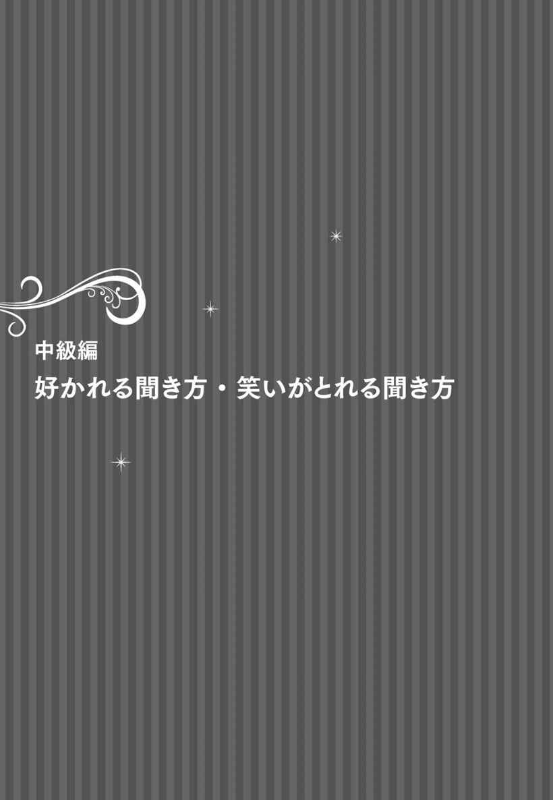
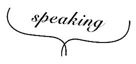

| 売れっ娘ホステス笑わせ上手の会話術―――一流芸能人に学べばもっと好かれる可愛がられる | |
| 難波義行 | |
| こう書房 (2015) | |
まえがき
この本を手にとってくださってありがとうございます。
２００４年に、『売れっ娘ホステスの育て方』という本を出版しました。20歳でスナックを始めて、30代のころ大きなクラブなどでホステスを指導した経験をまとめるつもりで書きました。おかげさまで多くの方にお買上げいただき、いくつかの書店様では、ビジネス書ランキングのベスト10にも入りました。
それから、「売れっ娘ホステスの...」「ＮＯ．１キャバクラ嬢が...」といった本が出版されるようになり、私より多彩な経験のある方々による名著が生まれました。
その後の私は、夜の街のインストラクターから、昼の一般企業様のインストラクターへと移りました。そして、そのノウハウを『一流芸能人がやっているウケる会話術』という本にまとめました。自身４冊目となったこの本は、久しぶりに売れました。
それをホステス向けに書き直した（接客している場面に当てはめて、シミュレーションも加えた）のがこの本で、出版したのは２００９年です。ずいぶん昔のことなので、あまり内容を覚えていませんでした。しかし、出版社さんから
「まだ売れているので、いまの時代にあわせて書き直してもらえませんか」
とお声がけいただき、読み直してみました。我ながらいいことを書いてあります。
私の本は、「もしこの話題を、この一流芸能人が話すなら、こんな風にアレンジする。そうする理由はこれだ」といった例文で展開します。それを、２０１５年の現代風につくり直してみました。
この本は、私がセミナーで語る、「場の読み方」「聞き方」「話し方」のすべてが詰まっています。いま接客や営業に携わっていらっしゃる方、ぜひもう少し中身をごらんになってください。きっと、あなたのお役にたてます。
＊本書は『売れっ娘ホステスの会話術〈笑わせ上手編〉』（２００９年９月初版）を改訂し、書名を変更して発行するものです。
売れっ娘ホステス笑わせ上手の会話術 もくじ
「またこの娘と話したい」と思ってもらえる「ビックリ」のちから
引き出してあげれば、お客様の話はもっともっとおもしろくなります
「緊張と緩和」を生みだす所ジョージの表現技術は大きなヒントです
聞き方には２タイプある ～まっすぐ引き出したり、曲げて戻したり～
基本形の「まっすぐ引き出す」も相手によってスタイルを変えましょう
冷静な整理と大胆な想像で、そのお話はもっともっとおもしろくなります
ウソとホントのあいだの薄皮一枚に「おもしろい話」があるんです
「その先」まで想像してみると、おもしろいコメントが浮かびます
「その人らしく」から「ありえない」へと発想をふくらませてみましょう
小さな「宿題」をちゃんとやると、お金がもらえるようになります
おもしろい話のはずなのに盛り上がらないのは、表現技術が足りないのかも
上沼恵美子の「話の世界に引き込む表現技術」をマネてみましょう
本文デザイン北路社
カバーデザイン冨澤崇（Ebranch）
カバー・本文イラスト門川洋子
目的によって、話し方って変わるんです
人が話をするのには、目的があります。そして、その目的の違いによって、話し方が変わります。
たとえば、あなたの彼氏が浮気をして、彼氏やその浮気相手とケンカになったとします。そのケンカで話をする目的は、自分の言い分が正しくて相手がまちがっていることを主張する、つまり「勝つ」ことです。
また、お店でのミーティングで、次のイベントの内容やお客様への告知方法について話し合ったとします。このとき話をする目的は、「正しい結論を求める」ことです。ですから、ケンカのときのように自分の意見をぶつけるのではなく、人の意見をよく聞きながら、自分の意見も主張する、というのが正しい話し方になります。
それでは、お店でお客様と会話するときはどうでしょう。このときの話す目的は、「お客様に楽しんでいただくこと」です。ケンカとの違いは「勝たなくていい」こと、ミーティングとの違いは「正しい結論がいらない」ことです。
このように、話す目的は状況によって変わります。そして、状況にあわない話し方をすると失敗します。
たとえば、学生のころに口ゲンカの強かった娘が、その話法で接客すると失敗します。また、営業ウーマンが商品を売り込むまえに自己主張の強い雑談をしても失敗しますし、雑談中の話法のまま商品を売り込んでも失敗します。
会話には目的があるということ。
相手から好感を持ってもらうには、目的に合った話し方を使うこと。
このふたつを、よく覚えておいてください。
会話のタイプは大きく２つに分けられます
「会話はキャッチボール」という言葉をよく使います。これは、相手の言葉をうまく受け取り、相手が受け取りやすいように投げかえすのが会話だ、という意味です。このボールのやりとりには２つのタイプがあります。次の例をくらべてみてください。
例１
Ａ「ねえ、あゆみちゃんはどこの出身だっけ？」
Ｂ「私、岡山の出身です」
Ａ「岡山かぁ、いいところなんだろうね」
Ｂ「ええ、瀬戸内海に面していて、温暖な街なんですよ」
Ａ「食べ物もおいしい？」
Ｂ「桃やマスカットが有名です。あと、お土産といえばキビ団子かな」
例２
ア「ねえ、あゆみちゃんはどこの出身だっけ？」
イ「私？ 岡山よ」
ア「ああ、キビ団子が有名な。あれもらうとさあ、家来になれっていわれてる気分になるよね」
イ「あら、そう？ ところで、そういう井森さんは、どこなの？」
ア「俺？ パリ」
イ「また冗談。井森さんにそんな異国情緒、見当たらないじゃない」
ア「あ、パリのこと知らないな？ 山形と青森のあいだにあるんだぜ」
イ「あいだって、それ秋田じゃないの！ ふふ、そういえば、なまはげの子孫て感じはあるわね」
いかがでしょう。どちらも、よいキャッチボールになっています。でも、話題はおなじ「出身地」なのに、少し違いがありませんか？
例１では、Ａは質問者に徹して、Ｂの話を聞いています。そのため、Ａの言葉を消して読んでも、話の全容がつかめます。
一方、例２は、どちらが話す、または聞く、という役割分担がありません。ですから、アかイのどちらかを消してしまうと、話の全容がつかみにくくなります。こういうのを「掛け合いタイプ」といいます。
会話の基本は例１のような、役割分担が明確なタイプです。つまり、出身地を話題にするなら、どちらかが聞き手（リスナー）になり、ひととおり話し手（スピーカー）の話を聞いてから、「あなたはどちらの出身ですか？」の合図で役割を交代するパターンです。
例２のようなタイプは基本を変形させたもので、親しい相手との会話や、意見交換をするような対話形式のときに用いられます。
盛り上がる会話には３つの要素が必要なんです
会話が盛り上がるかどうか。それを決めるのは、次の３つの要素です。
①話の中身
②気持ちを伝える表現力
③楽しい時間を過ごしてもらおうという気持ち
この３つがそろえば、相手に「楽しかった！」と感じてもらえます。でも、なにかひとつでも欠けると、うまくいかないんです。
たとえば、あなたにとっておきの「スベらない話」があったとします。でもそれを二日酔いの翌日、オープン直後のお客様に話すと、見事にスベったりします。
あるいは、仕事の帰りにお店のみんなとおもしろい事件を見ることって、ありますよね。でも、その事件の話をするとき、売れているホステスが話すと、自分やほかの人が話すよりも、なぜかおもしろく聞こえた経験はありませんか。
そうです。おなじものを見ても、それを伝えるための「話のつくり方（中身）」でおもしろさが変わるんです。さらに、そこに「おもしろく伝える技術」と、「相手に楽しんでもらいたいという気持ち」が加わって、初めて会話が盛り上がります。
これは、あなたがリスナー役のときでもおなじです。
たとえば、お客様が笑える話をしてくれたとき。このときにあなたが、お客様が話しやすいように内容を整理したり、盛り上げながら進行できれば、もっとおもしろい話にすることができます。でも、そうした技術がどんなにあっても、「興味をもって聞こう」という気持ちがなければ、お客様のテンションが下がりますし、しっかり聞いていても、それを伝える表現力がなければ、おなじ結果になるでしょう。
対話形式の場合もおなじです。「お客様の気持ちを読みながら２人で話をつくる力」「楽しませたいという気持ち」「盛り上げる表現技術」の３つが必要なんです。
コンパのように話してはいませんか？ それじゃ、ダメ
キャバクラのスタッフが新人ホステスに仕事を教えるとき、「だいじょうぶ、コンパとおなじだから、リラックスして楽しんでね」ということがあります。
これ、力を抜いてもらうためのアドバイスとしては正しいのですが、お店でお客様に応対するのとコンパとでは、ちがう面もあります。
たとえばコンパでは、男性に食事代等をおごってもらうことはあっても、お金をもらうことは少ないでしょう。また、コンパでは男性のほうから積極的に話しかけてくれますが、お店では立場が逆になります。
そして、もっともちがうところ。それは、「相手のほとんどがおじさん」だということです。
「友だちや若いお客さんとはうまく話せるけど、おじさんは苦手なんです」という悩みを新人ホステスから聞くことがよくあります。こうなる理由はいくつかあります。
ひとつは、話題があわないことです。おじさんは、思い出話が好きです。たとえば「子供のころはドカベンが大好きでね」といった話をよくします。こういうときは、
「ああ、野球のお話でしょ。ファンの方、多いですよね。どんなシーンが印象的でした？」
といった返しをして、熱い気持ちを語ってもらいます。それを楽しそうに聞いていれば、お客様は満足してくれます。ところが、
「ああ、野球のお話でしょ。私のころはタッチを観てたわ。カッちゃんが死んだときは泣いちゃった」
と返すホステスがいます。あるいは、
「ビートルズが好きでね、いまでもむかしのＬＰをレコードプレイヤーで聴くんだ」
と話し始めたお客様に、
「ごめんなさい、私そういうの苦手なんです」
などと返します。
お客様は、コンパの相手ではありません。自分が話したかったり聞きたかったりする話題ではなく、お客様が望む話題でキャッチボールすることが大事です。そのためには、おじさんたちが話したくなるように、彼らが育ってきたころの文化に興味をもち、覚えましょう。
また、会話のスタイルがあわないこともあります。
若い人同士での会話は、対話形式になることが多いものです。とくに女性は対話形式が得意ですし、テンポよくポンポンと言葉が出てきます。
しかし、歳をとって頭の回転がにぶくなり、しかも酔った状態のおじさんは、あまりスピーディーにやりとりができません。それに、軽快だけど中身のないやりとりをするよりも、ひとつの話を語りきる、またはしっかり聞くというような、正式な会話形式を好むのです。ですから、その形式でうまく話せるように練習してください。
やたらと口説かれてしまうのは、会話の中身に問題があるんです
若いホステスのなかには、
「お客様に口説かれることが多くて困るんです」
という悩みを持つ人もよくいます。こういう娘とお客様との会話内容を聞いてみると、たとえば手持ち時間10分の接客中に、
「このあいだの割烹、おいしかったですね。あのお刺し身、最高でした。（中略）あっ、そういえば、裏路地にバルができたそうなんです。行ってみたいわ」
といった会話をしています。私にいわせると、これではお客様としては、口説く以外の楽しみがみつかりません。
夜の街の常連さんには、家に帰っても奥さんや子供とあまり口をきかない、会社には話し相手がいないといった、さびしい方が多いものです。そんなお客様が、お金を払ってまでホステスとしたい会話とは、「自分の話を親身になって聞いてくれる」「おもしろい話をしてくれる」というような、内容のある会話です。
もちろん、モテることを自慢する方、羽振りのよさを自慢する社長といった、一見さびしそうでない方もいらっしゃいます。しかし、ほんとうにモテるなら、いろんな女性に出会える素人相手のコンパに参加するでしょうし、部下や家族がプライベートな話し相手をしてくれるなら、毎晩１人で夜の街に通ったりはしないはずです。
そういうお客様にとって大切なのは、心をゆるして話せる相手なのです。そして、「この娘と話すのが楽しい」と感じてもらえるようになると、口説かなくなります。なぜなら、口説いて断られると、もうその娘と話せなくなるからです。
ホステスにとって「口説かれる」という悩みはつきものです。しかし、会話の中身を変えれば、その数は減ります。ほかにも不要に口説かれなくする方法はあるので、のちほど紹介します。
会話上手の芸能人をお手本にしましょう
「どうすれば、うまく話せるようになりますか？」という質問もよく受けます。こういうとき私は、
「あなたにとって、うまく話せる人とは、どんな人ですか？」
とたずね返すことにしています。なぜなら、「誰のような話し方をめざす」というイメージがないと、訓練のしようがないからです。
会話上手になりたければ、まずは「目標とする人」を決めること。
目標は、たとえばお店のママでもかまいません。でも、仕事中ずっとそばでママを見ているわけにもいきませんよね。それに、世の中には、もっといいお手本があります。そう、テレビに出ている芸能人です。
トーク番組に出てくる芸能人、しかも一流と呼ばれる人たちは、「会話の中身」「表現技術」「楽しませようという気持ち」の３がそろっていて、話すのも聞くのも上手です。そんな彼らをお手本にしない手はありません。
トークがうまいなと感じる芸能人がいたら、彼らの出る番組を録画しましょう。そして「いまの話、おもしろい！」と感じたら、録画を巻きもどして、なぜおもしろいと感じたのかを考えてみるんです。そして、オチにくるまでの話すスピードや強弱、オチの直前にくるちょっとした間を口マネしてみます。これをくりかえしていると、その芸能人の考え方や話し方が、だんだんと身についてきます。
ふだんはあまり考えずに、ただ「楽しい！」とだけ思って観てしまうテレビですが、よく観て盗もうとすれば、自然にできるようになるものです。カラオケで歌いたい曲をＣＤで真剣に聞いて覚えるのとおなじです。
これ、とても手軽でとっつきやすい方法なので、どのホステスにもおすすめしています。具体的な「マネするポイント」は次章以降でくわしく説明します。

まずは「好かれる聞き方」を身につけましょう
さあ、それでは会話について、具体的に説明していきましょう。会話には、役割分担が明確なタイプと、そうでないタイプの、２種類ありますが、まずはおじさんにウケやすい、役割が明確なタイプから始めます。また、役割はリスナー（聞き手）とスピーカー（話し手）に分かれますが、最初はリスナーの技術です。
次ページの例３に登場する「内海さん」は、やや年配で、どちらかというと、聞くよりも話すほうが好きなお客様です。この「内海さん」とホステスの「エリちゃん」の会話例を使って、「お客様に好かれる話の聞き方」を見ていきます。それがわかったら、次はこれを変形させた「笑いのとれる聞き方」について説明します。
スピーカーの技術と、それを応用した対話形式の会話については、そのあとで。
エリ「どうもいらっしゃいませ、内海さん」（あいさつ）
内海「やあエリちゃん、元気？ あのさあ、エリちゃんは料理やるの？」
エリ「えっ、はい。お昼ごはんはよくつくりますよ」（応答）
内海「そう。僕は最近、カレーづくりにハマっちゃってね」
エリ「いいですねー、カレーですか」（同調）
内海「うん、土曜に仕込んで、日曜の昼にみんなで食べるんだ」
エリ「内海さん、すごいじゃないですか！」（驚き）
内海「いやー、それにしても隠し味っていうのは、奥が深いね」
エリ「ああ、隠し味っていろいろあって、楽しいんですってね」（同調・相づち）
内海「うん。なかでも、自分でも驚いたのは、胃腸薬だね」
エリ「胃腸薬？」（確認）
内海「そう、漢方の胃腸薬。あれってね、カレー粉の成分がいっぱい入ってるんだよ」
エリ「えっ、そうなんですか？」（驚き）
内海「うん、ターメリックとかクローブとかたっぷりでね、よく効くんだこれが」
エリ「へえー、じゃあ香りがたつんでしょうね。うわあ、美味しそうだなー」（同調）
内海「（照れ笑い）」
内海「いいものじゃないけど、逆によくない隠し味だと、味噌かな」
エリ「えー、味噌ですか!?」（驚き）
内海「うん。醤油入れる人いるでしょ。ヘヘッ、あんな感じで入れてみたんだよ」
エリ「うーん、想像つかないなあ。どうなるんですか？」（振り）
内海「いやね、ルーを入れるまではよかったんだよ」
エリ「ちょっと待ってください、まず肉と野菜が入ったスープがあって、味噌汁をつくるみたいに、こう味噌を溶いて......」（確認・ペース調整）
内海「そう、少しずつね」
エリ「これは上等な味噌汁みたいで、美味しかったんでしょうね。ええ、わかります。で、ルーを入れてしまいました」（盛り上げ）
内海「で、一晩寝かして次の日の昼になった」
エリ「はいはい、待ちに待ったお昼です！ すると？」（合いの手）
内海「ひどいんだよ」
内海「どうにもならなかったねぇ」
エリ「（大笑い後）ふふっ、すみません。きっと、すごかったんでしょうね。でも、そうやって料理をつくると、奥さんも喜んでくださるでしょ」（笑い・まとめに入る）
内海「いや、家内はねえ、『時間とお金かけたら美味しいに決まってるわよ』ってひがむんだよ。でも、子供たちは美味しいって食べてくれるなあ」
「またこの娘と話したい」と思ってもらえる「ビックリ」のちから
例３に出てくる「内海さん」は、話すことが好きなお客様です。ですからエリちゃんは、「エリちゃんは料理やるの？」と振られたときも「ええ、いろんな料理をつくれますよ」と自分が話す方向にはもっていかず、かんたんに「つくりますよ」と応答するだけにして、お客様の出方を待っているんです。
すると内海さんはカレーの話を始めました。そこでエリちゃんは、さらに話を引き出すために「いいですねー、カレーですか」と同調してます。ここ、ポイントです。
ちょっと話が変わりますが、たとえばあなたがお友だちに「あのね、貯金がたまったからマンション買うの」といったら、おそらくほとんどの友だちが驚いてくれますよね。だけどこれが「車検が近づいたから、クルマを買い換えることにしたの」だと、そんなに驚いてくれないかもしれません。あるいは「ずっと欲しかった靴、バーゲンでゲットしたの」となると、驚いてくれる人はずっと少なくなるでしょう。
でも、あなたからすると、マンションであれ靴であれ、買ったことがうれしいから話題にしているわけです。だから友だちが、それをまるで自分のことのように、うれしそうに聞いてくれたり、驚いてくれたら、あなたもうれしくなるはず。
自分の意見や体験、おもしろいと思っている話をするときも、おなじです。それを相手が興味をもって聞いてくれ、同調してくれると、話しているあなたはうれしいでしょ？ さらに驚いてくれたなら、もっとうれしいことでしょう。
お客様もおなじなんです。たとえばさっきのカレーの話を、同調も驚きも示さずに聞いていると、お客様は「この娘は俺のおもしろさがわからない」「どうも馬が合わない」などと感じてしまいます。そうではなく、スピーカー（お客様）が「楽しく話せた」「相手がこの娘だと、うまく話せるな」「またこの娘と話したい」と思ってくれるように「聞く」ことが大事。同調や驚きは、そのための手段なんです。
バーバルコミュニケーションとノンバーバルコミュニケーションという言葉、聞いたことはありますか？ 人はみな会話をするときに、この２つのコミュニケーションを使っているんです。ちなみに、バーバルというのは「言語的」という意味で、言葉のこと。ノンバーバルとは「非言語的」という意味で、姿勢や表情、視線、ジェスチャー、声の強弱やトーン、テンポなどのことです。
欧米での実験によると、会話相手から受ける印象は、バーバルよりノンバーバルな要素で決まるそうです。「えっ？」と思われた方もいらっしゃるでしょうが、これ、案外大切なんです。
ちょっと想像してみてください。
あなたは部屋で彼氏とくつろいでいます。しばらくしたら彼が居眠りを始めたので、あなたはこっそり携帯メールをのぞき見してしまいました。そのとき彼がふいに目を覚まし、こちらを向いて、「ちょっと勘弁してよ」といいました。
さて、このとき彼氏は、どんな表情をしながら、この言葉をいったでしょうか。笑いながら？ 怒った顔で？ あきれたような顔で？ おなじ言葉でも、いうときの表情がちがうと、あなたが受ける印象も、ちがってくるはずです。
また、そのときの声の感じはどうでしょう。びっくりしたように高いトーンでいった？ それとも、叩きつけるように強く、あるいは低くゆっくりと？ 声の感じがちがうと、やはり受け取り方もちがってきます。
もし彼氏がその言葉を、無表情な顔で、低い声でゆっくりいったとしたら、どうでしょう。あなたはきっと、とても反省するでしょう。彼が、深く、静かに、すごく怒っている、と感じるでしょうから。実際は彼は怒っていなくて、たんに寝起きで表情や声色がうまくつくれなかっただけだとしても、です。
おなじことを話しても、ノンバーバルな要素によって伝わり方が大きく変わること、わかっていただけましたでしょうか。そうなんです。どんなにお客様の話に共感できても驚いても、表情や声などを工夫しないと、それを伝えられないんです。だから、気持ちを伝えるための表現技術を身につけることが大事なんです。
では、どうすればいいのでしょうか。前出の例３を使って説明します。
まず、最初はあいさつです。ここ、とても大事です。水商売ではよく「接客は３秒で決まる」といいますが、会話もスタートがとても大切で、ここではずすと空気を修正するのがたいへん。ですから、席につくまえにテンションをあげて、最高の笑顔で「お話できるのがうれしい」という気持ちを表わしてください。
そして会話が始まって、少ししたところで内海さんが「カレーづくりにハマっちゃってね」と話題を提供してきました。ここで聞き上手なエリちゃんは、お客様の「話したい気持ち」をさらに高めます。そう、内海さんとの体の距離を近づけて楽しそうに「いいですねー、カレーですか」と同調するんです。
そのあとも、話の途中でタイミングよく相づちをうって、「あなたとおなじ気持ちになっていますよ」と示します。ここもポイント。とくに相手が、話に割り込まれるのがきらいでハイペースに話を進めるお客様の場合は、途中で言葉をはさめないので、素早く相づちをうつことで、同調していることを示すことが重要になってきます。
会話中の視線は、どこに向けましょうか。基本は「相手の目を見る」ですが、じっと見るのは疲れますし、それをきらう人もいます。ですから、額から口のあいだあたりを少しづつ動かしながら見て、話のポイントになるところで、しっかり目をあわせるようにするといいでしょう。もし相手がイケメンで、目をあわせるとどうしても照れてしまうような場合には、目をあわせるふりをして、眉間のあたりを見ます。こうすると、直接視線はあいませんが、相手は目を見ていると感じてくれます。
話が進んできたら、体を前に倒したりして、距離を近づけていきます。そして、驚いたところでうしろにさがります。眉をしっかりあげて「驚いた！」ことを示しましょう。そのときは、声も大きくします。
また話が進むと距離が近づいて、視線をあわせる時間も長くなりますが、驚いたあとはちょっと考える（想像する）ような態度を見せ、いったん視線をはずして距離をとりなおします。おなじように、笑ったあとも距離の修正、視線はずしを行ないます。
このように、近づけた距離を戻したり視線をはずすことで、メリハリがつきますし、わざとらしくなくなります。声や表情もおなじで、同調や確認のときは声のボリュームをさげて、笑顔を基本にします。すると驚きの表情や声の大きさが引き立ちます。
これが「相手に好かれる聞き方」の基本です。といっても、文字で読んだだけではイメージしにくいでしょう。
この基本ワザ、久本雅美のトークがとても参考になります。彼女は、距離のとりかたや手振りの入れ方が、とても上手なんです。
たとえば、ゲストがキーワードになりそうなこと（この会話例なら「カレー」「隠し味」など）をいうと、ぐっと前かがみになって興味を示します。そこで「私もよくやるんです」といった言葉を挟むときは、胸のあたりで２～３度、手を振ります。
その後、驚いたところでいったん距離をとりなおし、話が進むにつれ、また顔や体を近づけます。そしてオチにきたら、拍手をしたり、お腹をかかえながら大笑いしたり、横に倒れたりと、いろんなバリエーションで視聴者におもしろさを伝えます。
夜の街のお客様はお酒を飲んでいますから、やや大げさにノンバーバルな要素をとりいれないと、言葉だけではなかなか伝わりません。かといって、さすがに横に倒れるところまでいくと、女性らしさがなくなりますし、若いゲストを指差したり（ガールズトークならＯＫですが）、少し眉間にしわをよせすぎるといった、ホステスに不向きなクセも久本雅美にはあります。でも、それ以外はとても参考になります。ぜひ、テレビでじっくり確認してください。
引き出してあげれば、お客様の話はもっともっとおもしろくなります
お客様に「おもしろい話」をしてもらうには、「お客様の話をおもしろくしてあげる聞き方」をする必要があります。
「でも、話がおもしろいかどうかは、内容次第じゃない。リスナーが〝話をおもしろくする〟ことなんて、できるの？」と思われたかもしれません。もちろん、自分がスピーカーをしているときのように「話をつくりこむ」ことはできませんが、聞き方によって、お客様の話をよりおもしろくし、盛り上げることはできます。
例３の後半からを見てみましょう。漢方薬のオチがついたところでエリちゃんが、関連した話がないかを探るために「ほかにもなにか、いいものありますか？」と質問しています。すると内海さんは、「いいものじゃないけど、逆によくない隠し味だと、味噌かな」と、もったいぶった答えを返してきました。
ここで内海さんの表情に注目！ というか、想像してみてください。こういうときはきっと、意味ありげな表情になっているはずです。こうした口ぶりや表情の変化から、おもしろい話になりそうな空気を感じ取ったエリちゃんは、ここが盛り上げのチャンスと、「えー、味噌ですか!?」と驚きを示しました。
実は、ここで上手に驚いてあげたので、内海さんも「うん。醤油入れる人いるでしょ。ヘヘッ、あんな感じで入れてみたんだよ」と、のることができたのです。もしここでエリちゃんが驚かず、「へえー」とだけ答えていたらどうでしょう。きっと「でも味噌は、ひどい味だったね」で、話が終わってしまいます。
例３は、その場の状況がよくわかるうえに、少しずつ盛り上がる会話になっています。それは、エリちゃんが上手に内海さんから話を引き出し、「話をおもしろくしている」からなんです。逆に、「チャンスを逃さずに、うまく聞く」ことができないと、話のおもしろさを引き出してあげることもできないわけです。
「状況をわかりやすく」すれば同席のお客様を引きつけられます
「状況をわかりやすくしてあげる」というのも、相手の話をよりおもしろくする聞き方のテクニックです。これも久本雅美がうまいので、彼女の例で紹介します。
たとえばトーク番組のゲストで大物俳優が、「いや、あの女優さんとは思い出があってね」と、意味深な言い方をしたとします。こうしたきっかけを久本雅美は逃しません。それに、ここで見せ場をつくってあげるとゲストの顔が立ちます。そこで、
「いやいや、ちょっと待ってください。聞き捨てならないですよ！」
などと言葉を挟み、周囲を見まわし、まずはみんながしっかり聞く状況をつくります。そしてゲストが話し始めると、
「ええ、イルミネーションを見にいったんですね、それっていつ頃ですか？」
「冬ね、はい。で、夕方になって、イルミネーションが始まった」
「ああ、そんなに大がかりだと、人もいっぱい集まったんでしょうね」
といった質問によって、現場の状況をわかりやすくします。すると、スピーカーはその場を思い出して話しやすくなりますし、まわりの人も絵が見えて想像しやすくなるので、より話の世界に入りこんでいけます。
その後は「はいはい、わかります」「うんうん、なんかいいムードですね」「えっ？ で、どうしたんですか？」「はい、振りむいた！」「うん、いった！ すると？」と雰囲気を盛り上げながら、オチにもっていきます。
実は例３も、おなじ手法を使っています。
くわしい状況を聞き出すための「うーん、想像つかないなあ」という振りや、「待ちに待ったお昼です！ すると？」という合いの手があって、話が盛り上がっていきます。さらに「こう味噌を溶いて......」のところではジェスチャーつきで現場の状況を再現すれば、同席のお客様は、より話に引き込まれていくでしょう。
せっかく「盛り上げ方」にふれたので、もうすこしだけ説明をくわえます。
中年の野球ファンならだれでも知っている長嶋監督のエピソードに、「代打淡口」というものがあります。ふつうに話すとこんな感じです。
普通バージョン
ねえ、「代打淡口」のお話、知ってる？ 知らない？ あのね、長嶋監督がチャンスの場面でね、淡口っていう代打の切り札をつかったの。それで、ふつうなら打たせるところなのに、敵の裏をかいてバントさせようとしたんだけど、審判に「代打淡口」っていうとき、バントの構えをしちゃって、バレたんだって。
これでは、元ネタがいいわりにあまり盛り上がりません。そこで、盛り上げる達人、所ジョージ風につくってみました。あくまで「風」なので、彼ほど面白くはありませんが、彼が話していると想像しながら、読んでみてください。
所ジョージ風バージョン
長嶋監督はすごいよ！ ホントすごいんだって！ あのね、彼が最初に監督になったころのことなんだけど、この試合に勝ったら優勝がみえてくる大切な試合があったのよ。さあ試合は終盤、勝ってんだけどもう１点ほしい！ どうしよう？ あっ、ランナー出ちゃった！ よし点を取ろう！
このころ、淡口っていう選手がいてね、出れば打つ、ここぞで打つ、まあ代打の切り札ですよ。バッターボックス入るとき、小さく腰振ってさあ、小学生がみんなマネしてた人気者ですよ。
普通にいったら、ここは淡口でしょ？ で、打ちにいかせて勝つぞってところでしょ？ ちがう！ そこが長嶋さん！ みんなの裏をかいてバントさせようと考えたんです！ うっしっし、これなら絶対バレない。よしいくぞ！ そう思いながら監督がベンチを出ました！
（ゆっくり手をあげる動作を入れて）『タイム！』（ぐっとかがんでバントの構えをしながら）『代打淡口！』
そんな人いる？ ね、すごいでしょ？ これやられた相手チーム、どうすべき！ いや、淡口さんどうすべき？
と、こんな感じです。
ここで、所ジョージ風につくり、彼が話しているシーンを想像しながら読んでいただいたのには、理由が２つあります。１つは、彼の脚色です。
彼は、話の背景、登場人物の心理などをいれながら、すこしずつ話が盛り上がるように脚色します。それを聞いているリスナーは、「これからどうなるんだろう」「なにがいいたいのだろう」と期待感を高めます。
つぎの理由が、彼の表現技術です。彼は早口ですが、オチの直前には話をとめ、絶妙な間（溜め）をつくります。この台本でいえば、バントの構えをするところです。それをみているリスナーは、「エッ、なになに？」と、気持ちの高ぶりがピークに達します。そこにオチがくるので、一気に力が抜けて、笑ってしまうのです。
また彼は、間のつくり方だけでなく、ほかにも高い表現技術をもっています。もし彼がこの台本を読むとしたら、「このころ、淡口っていう選手がいてね」あたりで声のトーンをさげてゆっくり話し、「ちがう！ そこが長嶋さん！」で強く話す、といった強弱、緩急の工夫をするでしょう。このように、盛り上げる脚色と、その面白さを伝える表現技術があるからこそ、長く一流でいられるのです。
これらがおもしろく話すポイントで、「緊張と緩和」と呼ばれる法則です。つまり、「話のオチにむかってすこしずつ盛り上がっていくうちに緊張感が高まり、間でピークに達し、オチで緊張感が一気にほぐれ、納得、笑いという緩和状態になる」ということです。
緊張と緩和
～これが話芸の基本です～
「緊張と緩和」という言葉は、落語の業界でつかわれる言葉です。この業界では、話を脚色し、よい間をとりいれることを、「話に緊張と緩和をうむ」というそうです。そしてこの方法は、笑いをとるときだけでなく、泣きをさそうときも、怖がらせるときにもつかいます。
たとえば、怖い映画に出てくる鮫やホッケーマスクをかぶった人は、不気味な音楽とともに、じわじわと近づいてきます。そして、音楽が大きくなって止まり、視聴者が「くるぞ！」と思っているところで「キャー！」というシーンになり、緩和（納得）します。
このように、緊張させてから緩和をうむのが話をつくる基本形なのですが、さきほどの所ジョージ風の例では、緩和から緊張で笑いをとる方法も入っています。それは、「代打淡口！」のオチで笑っている、つまり気がゆるんでいる観客に、「そんな人いる？ ね、すごいでしょ？」ともう１つオチをつづけているところです。
また、話の最後に「淡口さんどうすべき？」というオチがあるので、１つの話に３つもオチが入っています。これはかなり上級編で、ふつうはオチが１つです。そしてそのオチは、緩和から緊張ではなく、緊張から緩和にもっていくのが無難です。
さて話をリスナーの説明に戻すと、オチがきたときの笑いも大切です。緊張と緩和という言葉を知らなくても、誰でもオチの前には一定の間をとります。そのとき、お客様と呼吸をあわせて、タイミングよく笑ってください。
慣れたホステスほど笑うタイミングがよくなります。そして、やや大げさに笑います。やや大げさがぐらいがいいのです。同調、驚きとおなじで、お客様の話に引きこまれていることをしっかり示すのが、簡単に好感度をあげる秘訣です。
聞き方には２タイプある
～まっすぐ引き出したり、曲げて戻したり～
つぎにすこし視点をかえて、トーク番組の司会者を例に聞き方のスタイルについてお話します。
トーク番組に出演する芸能人のことをゲストとよびます。ゲストとはお客様という意味なので、大切に扱われます。ですから番組は、ゲストのお話を中心に構成され、司会者は、リスナーの役割が主目的となります。
「え？」と思われた方もいらっしゃるでしょう。たしかに、明石家さんまなどの有名司会者は、自分でスピーカーの役割もしますし、よく話しているイメージがあるので、リスナーと感じないかもしれません。
しかし、「踊る！さんま御殿!!」（日本テレビ系）を思い出してみてください。
あの番組はテーマを提供されたゲストがスピーカーとして話す番組で、明石家さんまは、そのお話を聞いたコメントを発言しているだけ、つまりリスナーなのです。そして、その面白いコメントが印象にのこるために、ずっと話していたように感じるのです。
明石家さんまのように、ゲストの話につっこんだり、ボケたりしながら聞く方法を、私は「曲げて戻すタイプ」のリスナーとよんでいます。キャッチボールにたとえれば、たまに捕りにくいボールを投げ返して、ドキドキ感を楽しむ──といったところでしょう。
また、さきほどのカレーの会話例は、相手の捕りやすいボールを返すタイプで、私は「まっすぐ引き出すタイプ」とよんでいます。
ここでは、まっすぐ引き出すタイプの司会者として、黒柳徹子、小堺一機を、曲げて戻すタイプとして、くりぃむしちゅーの上田晋也、爆笑問題の太田光などをとりあげて、その聞き方のちがいを比較してみます。
基本形の「まっすぐ引き出す」も相手によってスタイルを変えましょう
おなじ「まっすぐ引き出す」タイプでも、黒柳徹子と小堺一機の番組には、それぞれの個性があります。
黒柳徹子の「徹子の部屋」（テレビ朝日系）では、事前にゲストから、いろいろな情報を集めています。たとえば、出身地や生い立ち、最近のビッグニュース、趣味などです。そのデータをもとに、黒柳徹子がシナリオを頭に描いて、そこからずれないように話を進行します。
一方、小堺一機の「ごきげんよう」（フジテレビ系）では、３組のゲストがきてサイコロで話題を決めるので、おそらく詳細なデータはないでしょう。さらに、トーク慣れしていないゲストが横から口をはさんだりすることも多いので、たいへんです。
そんな状況のなかで彼は、少ない手数でうまく話を引き出し、やわらかい笑いで話をまとめます。会場の客席を見ると、おとなしそうな方が多いように感じますが、こういう客層にウケがいいのもうなずけます。
また、小堺一機は、自分がスピーカーになることはほとんどありませんが、黒柳徹子は、海外旅行やお芝居の話題になると、スピーカーとして話します。このように、リスナーとスピーカーの比率は、司会者が視聴者に求められていること、司会者とゲストの関係などによって、変わってきます。
こうした「ちがい」を、接客にどう生かすか。
黒柳徹子のように事前に情報を集めておくことは、常連客との会話に役立ちます。小堺一機の「ごきげんよう」での立ち居振る舞いは、なじみのうすい小団体のお客様との会話の参考になります。また、こうした「まっすぐ引き出す方法」は、正式な場や、年齢が高いお客様、面識のないお客様に適しています。おもしろくする必要のない話にも応用できるので、リスナーの基本形といえます。
相手の話を素直に聞く「まっすぐ引き出す」に対し、「曲げて戻す」方法は、自分のボケやツッコミで笑いがとれるので、おもしろい話をさらにおもしろくできます。相手が親しいお客様の場合は、この聞き方で高感度がさらにアップするでしょう。
ところで「ボケ」「ツッコミ」って、具体的にはどういうことなんでしょうか？ 正式な定義はありませんが、おおまかにいうと、次のように私は考えます。
「ボケとは、ふつうの予想から考えると違和感のある言動をとること」
「ツッコミとは、違和感を指摘すること」
たとえばトーク番組で、こんな話をするゲストがいたとします。
「親バカかもしれないんですけど、うちの娘はホントにいい子でね。娘のいうことだったらもう、なんでも聞いちゃうし、ともかく可愛いがってるんですよ。
僕がまだサラリーマンやってた頃の話ですが、『誕生日の日に、７時からパーティーやる』って約束したんです。なのに、昼過ぎに急に仕事が入っちゃって。そりゃもうあわてて、すごい勢いで片づけましたよ。
それからプレゼントを持って駅まで走って。時計を見たら、なんとか間に合いそうでね。よかったって思って、ベンチに座ったんです。
そしたら、一瞬、気が抜けちゃったんでしょうね、ウトウトってしちゃって。ハッと気づいたら、プレゼントがないんですよ！」
この話に、ツッコミを入れてみましょう。
たとえば、くりぃむしちゅーの上田晋也風にツッコミを入れるなら、
「いやー、口ほどにもない可愛がり方ですね！」
といった感じでしょうか。彼はむずかしい言葉のボキャブラリーが豊富で、それを使った皮肉まじりなツッコミが得意です。いろんな本を読んで知識を貯めると同時に、使えるフレーズも貯めているのでしょう。
また、所ジョージ風で２例紹介するなら、
「Ａ君あのね、そういうのは、ウトウトと言いません。爆睡と言うんです！」
または、
「大切なプレゼント持ってたんでしょ？ 持ってたのに盗まれて気づかなかったんでしょ？ そういう人は親バカではありません。バカな親です」
といった感じでしょう。彼は、言葉遊びが得意で、言葉をすこし変えてちがう意味にしたり、表現を誇大にして笑いをとります。
こうしたテクニックは、何度もテレビを観ていればマネることができます。
たとえば上田晋也が「慇懃無礼」とか「いけしゃあしゃあ」といった言葉を使って笑いをとっていたら、それをメモしておいて、よく似たシーンで使えばいいのです。
あるいは所ジョージの考え方をマネて、「たくさん食べる」「ギャル曽根くらい食べる」「冬眠まえの熊くらい食べる」というように言葉を置き換える練習をすれば、やがて身につきます。
ところで、漫才におけるツッコミには、
① 話を進行させる
② 視聴者の気持ちを代弁する
③ フリ・オチ・フォローという漫才の基本形を完成させる
などの役割があります。③の「フリ」とは盛り上げの部分、「オチ」はボケ、「フォロー」は観客の笑いと同時に突っ込む、という意味です。これが基本形ですから、ふつうツッコミで大きな笑いはとれません。
しかし彼らは、あまり笑いがとれそうにないところでも、自分のツッコミを使って大笑いをとります。つまり、上手に突っ込めば、お客様の話をもっとおもしろくすることができるんです。
あえて重要ではないことを探してボケましょう
お気づきになった方もいらっしゃるでしょうが、ツッコミとは「相手（の話）をいじって笑いを引き出す」方法です。いくら親しくても、プライドの高いお客様などには使いにくい部分もありますし、突っ込まれるのを嫌うお客様もいるでしょう。
その場合は「自分（のおかしな考え方）をいじってもらって笑いを引き出す」方法、つまり「ボケ」が役に立ちます。これだと相手のプライドが傷つきません。
たとえば前項のゲストのトークに、爆笑問題の太田光風にボケるなら、
「プレゼント持ったままベンチで寝ちゃったんですか？ 風邪ひいたらどうするんですか！」
といった感じになります。それを受けて相方の田中裕二が、
「そういう問題じゃないだろ！」
と突っ込み、
太田「せめてマフラーはしてください」
田中「だから違うって！」
太田「新聞紙巻くと温かいそうですよ」
田中「もういいって！」
というように進めます。つまり、話の中で重要ではない課題を探してボケの方向を決め、突っ込まれながらどんどん遠いほうに向かっていくという方法です。いわば自分で道化を演じ、それを相手にいじってもらうことで話をおもしろくするわけです。
こうした笑いを２つ、３つと重ねるのには技術が必要ですが、１つめで笑いをとるのは簡単にマネできます。よく似たシーンになったら、いまなにが重要でないかを考えて、チャンスを待っていればいいのです。
今度は上沼恵美子風にボケてみましょう。
「ああつまり、爆睡してたということですか？ こうベンチに寝転んで（寝転ぶ）、毛布かけて（いびきをかくふりをする）」
「Ａさんごめんなさい、それウトウト違って、爆睡いうんじゃないですか？ こうベンチに寝転んで（寝転ぶ）、毛布かけてたんでしょう？（いびきをかくふりをする）」
といった笑いのとりかたになります。彼女は動きを取り入れたボケがうまいのです。
ところで、「話のおもしろさを際立たせるツッコミ方を覚えましょう」のボケとツッコミの定義に照らし合わせると、上沼恵美子風の２つめの例は、ツッコミともボケともとれます。
また、爆笑問題の太田光がよくする社会情勢についての話は、「世間の違和感を指摘している」という意味ではツッコミですが、「世間を見る切り口が一般的ではないので、ふつうには予想されない言葉である」という意味ではボケともとれます。
ボケ、ツッコミという言葉はよく使われますが、正式な定義はありません。どちらともとれるケースもよくあります。なので私は２つを区分せず、「コメント」としてひっくるめています。どちらも、相手の話に対する「意見の一種」だからです。
ちょっと練習！ 実際にコメントを入れてみましょう
ボケ・ツッコミの考え方、おわかりになりましたでしょうか。それではここで、実際にボケ・ツッコミを使って、例３の内海さんのセリフ、
「うん。なかでも、自分でも驚いたのは、胃腸薬だね」
「いいものじゃないけど、逆によくない隠し味だと、味噌かな」
に、コメントを入れてみましょう。
せっかくなので、あなたもこの２つに対するコメントを、少し考えてみてください。いくつかアイデアは浮かびましたか？ それではコメント例の紹介です。
「うん。なかでも、自分でも驚いたのは、胃腸薬だね」に対しては、
①「胃腸薬？ それって、薬と一緒じゃなきゃ食べられないってことですか？」
②「あれ、聞きまちがいかしら？ いま変な言葉が頭の中で響いてるんですけど」
といった返しができます。①は自分のコメントで小さな笑いがとれます。②は笑いをとりにいくのではなく、話を盛り上げるためのものです。
「いいものじゃないけど、逆によくない隠し味だと、味噌かな」に対しては、
③「あら？ カレーつくってる途中で味噌煮込みうどんに変えたんですか？」
④「わあー、内海さんってチャレンジャーですねー。カレーに味噌って、インド人もびっくりですよ！」
といった返しができます。これも④は話を盛り上げにいくコメントで、元の会話例のように「えー、味噌ですか!?」と驚くだけより、その気にさせることができます。
このように、いろんなかたちのコメントを入れることができますが、忘れてはいけない前提があります。それは、「コメントは、話をおもしろくして、相手の満足感を高めるために入れる」ということ。また、自分で笑いをとりにいって話の腰を折ったあとは、すばやく本筋に戻すようにしてください。これが「曲げて戻す」の原則です。

大きなオチは見逃さず、笑って話をまとめましょう
「相手の話をおもしろく」したあとに大切なのは、「その話を上手に終わらせ、次の話題に移る」ことです。なぜなら、せっかくおもしろい話でも、いつまでもだらだらと続いたら、だんだんおもしろくなくなってしまうからです。
そこで、ひとつの話を終わりにして、次の話題に移る方法が大事になってきます。
例３の最後のほうでエリちゃんは、大笑いしたあと、
「ふふっ、すみません。きっと、すごかったんでしょうね。でも、そうやって料理をつくると、奥さんも喜んでくださるでしょ」
といっています。これは「きっと、すごかったんでしょうね」という〝コメント〟と、「料理をつくると、奥さんも喜んでくださるでしょ」という〝質問〟の、２つの文でできています。この〝質問〟の部分は、次の話題を家族にするかどうかという探りと、このテーマはそろそろ終わりですよと相手に匂わせる、という意味があります。
注目してほしいのは前半の、〝コメント〟の部分です。この流れならボケたり突っ込んだりして笑いをとりにもいけますが、あえて〝大笑い〟というリアクションを中心にして、短くまとめようとしています。そうすることで「おもしろい話だった」という印象を強く残しつつ、話を終わらせるわけです。
このように大笑いで話をまとめる方法は、明石家さんまや小堺一機など、多くの芸能人が使います。もしゲストが突っ込んでほしくてボケたのなら、彼らもよろこんでツッコミを入れますが、意図してボケたのではなく、エピソード自体がおもしろくて観客が大笑いしたのなら、自分も大笑いしたほうが、ゲストの顔が立つからです。
ちなみに明石家さんまは、大笑いしたあと、なおも笑いながら、
「ああ、そうなの。○○して、それで□□して、ほいで？」
と振ってもう一度オチをいわせ、再度大笑い、という方法をよくとります。こうすると、さらにゲストの顔が立ちますし、視聴者もつられて笑ってしまいます。
明石家さんまも小堺一機も、うまいコメントを入れる達人です。でも、そんな彼らでも話自体のオチがしっかりしているときは、余分なコメントをはさみません。とくに大きなオチがくればそれを大切にし、盛り上がったところで次に移ろうとします。
また、もしゲストの話のオチが弱かったときは、たとえば小堺一機は、
「ハハッ、それはたいへんでしたね。あの、○○さんていらっしゃるでしょ。あの方がおっしゃってたんですけど」
と、よく似ているけれど、ずっとおもしろい話を短く入れ、笑おうと思ったのに笑えなかった視聴者を笑わせ（納得させ）ます。そうすることでゲストの顔も立ち、皆が楽しい気分でその話題を終わらせることができるからです。
小堺一機のようにオチを手伝うのはむずかしいでしょう。でも、大きなオチがきたらタイミングよく笑って、いいところでまとめに入るといった姿勢は、ぜひ見習いたいものです。そうすることで、お客様はもっと気分よくなってくださいます。
忘れていた「あのこと」を使って話をうまくまとめましょう
例３の最後でエリちゃんは、
「へえー、いいお話ですね。団欒が目に浮かぶようだわ」
という、きれいなコメントでまとめていますが、もしここで笑いをとりにいくなら、
①「なるほど、つまり夫婦仲は冷えきっているということですね」
②「そうですよね、やっぱりお子さんは喜ぶでしょうね。胃腸薬とは知らずに」
などとすることもできます。①の場合は内海さんからツッコミをもらい、笑いながら謝って、次の話題に、という流れになるでしょう。
覚えてほしいのは②のやり方です。これは芸能人もよく使う方法で、少し前に話した内容のうち、おもしろかったり気になったことを覚えておいて、相手が忘れてしまっているところにそれをぶつけるというやり方です。相手がよく知っていることであれば、その日に話したことでなくても大丈夫です。たとえば、こんなふうにです。
以前、ちょっとまじめなトーク番組に、近藤春菜と箕輪はるかの女性お笑いコンビ、ハリセンボンが出演していました。その番組で近藤が、いつになくまじめで、いい意見をいったときです。
箕輪「ホントそうだよ。正しいよ、......角野さん」
近藤「角野卓造じゃねえよ！」
と、突然のボケ＆ツッコミ！
それまでがまじめな話だったので、観客はその雰囲気に入り込んでいて、いつもの彼女たちのお笑いパターンが頭からはずれていたのでしょう。大ウケでした。
このように、話しているときは忘れているけど、話す前はみんなが知っていたことをまとめで使うと、強い印象が残り、話がうまいと感じてもらえます。
『「話したい気持ち」をどんどん高める聞き方』で、「接客は３秒で決まる」という言葉を紹介しました。これは、会話は最初の印象が大切だ、ということを示しています。
一方、「接客は３分で決まる」という人もいます。これは、席について最初の話（この本ですとカレーの会話例）で満足してもらえば、あとがラクだという意味です。
この「３秒」と「３分」の印象をよくするために、テンションをあげて最高の笑顔でスタートする、共感や驚きをたくみに表現して伝える、話が盛り上がるように進行する、オチがきたらタイミングよく笑ってまとめに入る、そして、お客様によっては笑いのとれるコメントを使うとよい──、といったお話をしました。
10分ほどのサイクルで席が変わるお店なら、これでかなりいい線までいけます。でも、30分ほどでチェンジするお店の場合は、これだけでは時間があまってしまいます。上手にまとめるだけでなく、次の話題にうまく話をつなげなくてはなりません。
そんなときに役に立つのが「木戸ニタチカケセシ衣食住」という言葉（次ページ参照）。これ、会話のつぎ穂といって、会話がとぎれそうになったり、次の話題を考えるときに、切り口となるテーマの頭文字を並べてあるんです。
この切り口と照らし合わせながら、例３の「次の話題」を探してみましょう。たとえば例３では家族の話題に触れていて、お客様ものってきています。ですから、
「休日はお食事のあと、どんなところに行かれます？」
などとつなぐといいでしょう。こうすると、たとえば家族とテニスをするという趣味の話題や、娘が好きなブランドショップの話題など、ひろい選択肢のなかから、お客様が話したいことを選んでくれます。
ここでちょっと、このあとの会話をシミュレーションしてみます。

例４
エリ「休日はお食事のあと、どんなところに行かれます？」
内海「食事のあと？ ああ、料理をしたあとはさすがに疲れてね。ゆっくりするよ」
エリ「そうですよね。ご家族が喜んでくださっても、やっぱり疲れますよね」
内海「うん、だから料理をしたら肩揉んでもらって、ゆっくりするね。あっ、でも、料理しない日は、みんなでスーパー銭湯に行くことが最近は多いかな」
エリ「スーパー銭湯ですか？」
内海「ああ、家内も娘も好きなんだよ」
せっかくつなげようとしたのに、最初の質問に対して「どこにも行かない」という答えが返ってきてしまいました。がっかりです。
でも、家族との話はきっとなにかあるはず。そこでエリちゃんは、「やっぱり疲れますよね」といったん濁して、次の質問を考えています。すると、ビンゴ！「スーパー銭湯に行く」という、おいしい答えが返ってきました。
ここですることは、「スーパー銭湯」というキーワードからの連想です。たとえば「スーパー銭湯風呂・食事・休憩室・往復のドライブ」というようにです。そして、
「スーパー銭湯って、いろんなお風呂があって楽しいですよねー」
「銭湯によって、お食事メニューがいろいろありますよねー」
などと、浮かんだキーワードを入れて質問をします。すると、きっと内海さんは、「娘がバブル風呂から出てこないらしい」とか、「いけすの魚が食べられたり、バイキングをやっている銭湯がある」といった話をしてくれます。
こうしてスーパー銭湯の話をしてもらい、終わればまた「木戸に...」を使ってつなぎます。お客様の状況にあわせて、自分がスピーカーになる話も入れます。
場持ちのいいホステスは、１つのキーワードからたくさん、速く連想することができます。そうなるには、まずは大まかな方向性を決める「木戸に...」を覚えましょう。そして時間のあるときに言葉の連想ゲームをして、慣れてください。これができると、お客様が話したい話題で、お客様にたくさん話していただけるようになります。
質問には意味や役割があることを知りましょう
これで「話の進行」についての説明は終わりです。が、ちょっと説明を加えておきたいことがあります。それは「質問」についてです。
ところで、「質問」の役割ってなんでしょう？ 主には次の２つです。
① 次の話題にいくために、探りを入れて方向を決める
② 話を深く掘りさげる
つまり、話題を振って、方向を決める（①）ために使う質問と、話の背景や場面をわかりやすくして盛り上げたり、話したいことをなるべく出し切ってもらう（②）ために使う質問があるんです。
①の場合は、その話題から連想される言葉を意識しながら質問すると、探りやすくなります。②の場合は、５Ｗ３Ｈ（いつ、どこで、誰が、なにを、なぜ、どのように、いくらで、いくつ）を意識すると、深くなります。
質問には役割があるという意味、おわかりいただけたでしょうか。
だから質問をするときは、意味のある質問をすべきなのですが、残念ながらそうなっていないホステスも見かけます。たとえば、こんな感じです。
例５
カオリ「いらっしゃいませ、はじめまして、カオリです」
大石 「カオリちゃんていうんだ。僕、大石」
カオリ「大石さんって、好きな食べ物はなんですか？」
大石 「僕？ うーん、和食系は全般に好きかな」
カオリ「へえー。じゃあ、嫌いな食べ物は？」
大石 「外国の、クセのある食べ物かなぁ。ブルーチーズとか苦手」
カオリ「へえー、そうですか。じゃあ、好きなテレビ番組はなんですか？」
大石 「えっ？ ちょっと待って。カオリちゃんの食べ物の好みも聞かせてよ」
カオリ「私？ 私はお肉が好きで、野菜はいろいろ嫌いです。で、好きなテレビは？」
ここまでひどくないにしても、初対面のお客様にこういう質問をして困らせている新人ホステスを見たこと、あなたもあるのではないでしょうか。
なぜこうなるのかというと、理由は次の３つが挙げられます。
① 相手に興味がない
いろんなお客様に興味をもって、精いっぱい接客していないと、多くのお客様に支持されるホステスにはなれません。
② 質問の意味や会話の進行方法を理解していない
質問を時間つなぎだと思っていたり、話のふくらませ方を理解していないと、お客様に楽しく話してもらうことはできません。当然、好感度も上がりません。
③ その話題への対応能力に欠けている
これは、お勉強不足といったところでしょうか。
タモリや小堺一機の会話力ってやっぱりすごい
例５のカオリちゃんような娘は、聞くのも話すのもヘタなことが多いものです。ところが、こんなカオリちゃんとでも、たとえば小堺一機が相手なら、きっとこんなふうに会話が成立します。
カオリ「小堺さんって、好きな食べ物はなんですか？」
小堺 「和食系は全般に好きですよ。カオリちゃんは、どんな食べ物が好きですか？」
カオリ「私？ 私はお肉が好きです」
小堺 「ほお、お肉ですか。でも、お肉もいろいろありますよね？」
カオリ「ええ、お肉なら、なんでも好きなんです」
小堺 「本当にお好きなんですね。最近とくに美味しいお店とか、ありました？」
カオリ「お店？ うーん、あるかなあ」
小堺 「ほら、焼肉屋さんとか、お鍋の店とか、行かれてません？」
カオリ「あっ、そういえばこのあいだ、すっごい美味しい焼肉屋さんに連れていってもらったんですよ！ それがね......」
このように、小堺一機のような「会話の進行方法」を理解している人がリスナーであれば、たいていの相手と会話が成立します。その逆で、進行方法を理解していないリスナーは、たいていの相手と会話が成立しないんです。
会話への対応能力といえば、タモリには驚かされます。たとえば会話する相手が、マニアックな趣味の話をテーマにしてきたとします。質問のパターンを覚えている彼は、基本的なルールやマナー、楽しい理由、むずかしい点などをたずねて、その中で視聴者が食いつきそうな部分を引っ張ります。これは、場慣れしたアナウンサーにもできそうです。
しかしタモリのすごさは、そのテーマについて多少の知識があるときに発揮されます。「あれって○○したとき、たいへんだよね」「□□するときあるでしょ、そういうときはどうしてる？」と、そのことについて知らないとできない質問で、ゲストと一体感を出しながら、会話を掘りさげるのです。これは、
●好奇心が旺盛で、広いジャンルのものに触れるよう心がけている
●よく観察して疑問点を見つけ、それを調べている
●もし人に話すとしたら、どの体験談がおもしろいかを考えている
といったことを、日頃から重ねているからできるのでしょう。
さらに彼は、深く話せる得意ジャンルも持っています。なかでも「料理」は強い武器です。これをマネて、多くのお客様が興味を示してくれそうな得意ジャンルを、いくつかりましょう。そして、その話題を利用した質問パターンや進行方法を考えておくんです。そうすると、会話がラクにできますし、おなじような会話を繰り返すことで、出来もよくなっていきます。
今日のダメ出しが次の会話を盛り上げます
ここまで、いかにして「お客様が喜んでくださる聞き手になるか」についてお話ししてきました。さらに「愛される聞き手」になるために、もうひと踏ん張りしてみましょう。その日の仕事が終わったら、芸人用語でいう「ダメ出し」をひとりで行なうんです。
帰りのタクシーの中で、自分が今日、どのお客様の席について、お客様とどんな話をしたかを、思い出してください。どんな話を、どういう流れでしたかと、記憶をたどっていくと、「あの話は、もう少し深く聞きだしてあげたほうがよかったな」とか、「あそこのタイミングがずれたので気をつけよう」「最後のコメントが弱かったかも。もっといいコメントをするとしたら...」など、いろんなことに気づくはずです。
そして部屋についたら、忘れないうちにメモしましょう。とくに「使える話」と「お客様情報」は絶対です。
使える話とは、たとえば今日知った美味しい飲食店の情報や、ためになる話、笑える話、使えるフレーズなどです。こうした情報を項目ごとに整理していくと、そのうち得意なジャンルができてきますし、会話の端々で笑いをとれるようになります。
お客様情報は、今日知った新しい情報や、クセ、話した内容です。クセとは、たとえば「話に興味がなくなると耳たぶを触る」「気分が乗るまでに時間がかかるので、前半はとくに注意」といったこと。これも次回の接客をスムーズにします。
お店にくるお客筋に特定の業界の方が多いなら、業界情報の項目もつくりましょう。たとえば、その業界の方が集まって「今日は棟上げでね」「棚卸なのにパートが休んで、たいへんだったよ」という話題になったときに、棟上げ、棚卸という言葉の意味がわからないと話に入れません。
こうして貯めたメモは、たまに読み返します。すると、記憶が定着します。また、
「近所の猫が、さかりがついちゃってたいへんなんですけど、お宅のイライザちゃんはどうですか？」
「このあいだ聞かせてくださったお話、あれ、夜中に思い出してまた感動して、涙が止まらなくなっちゃったんです」
などと会話に入れると、「あぁ、この娘は僕と話したことを、ちゃんと覚えてるんだ、きちんと話を聞いてくれているんだ」と思い、とても喜んでもらえます。
すべてのお客様との会話を思い出す必要はありません。それに、メモしなくても、たんに思い出すだけでも効果があります。たいていの人は、話のパターンをそれほど多くは持っていませんから、こうして思い出し、反省することで、次回そのお客様と話すときにタイミングを合わせやすくなりますし、じっくり考えて思いついたよいコメントは、おなじようなシーンで使うことができます。
そのときできる精いっぱいの会話をして、復習し、次に活かす。この繰り返しが、あなたを会話上手にし、お客様からの好意をたくさん得られるようにするのです。
ホスピタリティな気持ちで会話をしましょう
水商売などの接客業界では、ホスピタリティという言葉をよく使います。しかし、よく使うわりに、お店で正しい意味を教えてくれません。
ざっくりいうと、サービスとは奉仕（もてなす）、ホスピタリティとは歓待（歓んでもてなす）という意味です。２つをくらべると、ホスピタリティのほうが、自らすすんでもてなす意味あいが強く、献身的な姿勢が求められます。
また、ホスピタリティには「自分を中心に考えない」という要素もあります。「自分が楽しい＝うれしい」ではなく、むしろ「お客様が喜んだ＝うれしい」と感じる気持ちです。
私にいわせると、接客が楽しくないあいだは三流ホステスです。楽しんで働けて二流、お客様に喜んでいただけることがうれしいと感じられて、やっと一流のホステスといえます。売れっ娘になるには、ホスピタリティな気持ちが絶対必要なんです。
同様に、会話上手になるにも、ホスピタリティな気持ちが欠かせません。この気持ちがあれば、「どうすれば相手に喜んでいただけるか」と考えながら会話をするようになります。相手の気持ちになって話を聞き、相手の話に共感できるようになります。小さなことに驚いたり、笑ったりする必要性も、わかってくるでしょう。
そして、そんなホスピタリティにあふれた聞き方をしてくれるあなたを、お客様はきっと「かわいい娘だ、素敵な女性だ」と思ってくれます。
会話上手は聞き上手という言葉があります。これには２つの解釈があると私は思います。１つは例６の小堺一機のように、「聞き上手なら、相手を選ばずよい会話を成立させる」という意味。もう１つは「会話上手とは相手を楽しませる人で、それはうまく聞く（相手に楽しく話してもらう）ことでも実現できる」という意味です。そしてこの２つめの解釈が、お客様から愛されるには重要だと思うのです。
お客様に覚えてもらえない
「聞き方編」もそろそろ終わりが近づいてきました。最後に、ホステスからよく受ける悩みと、その解決策についてお話ししましょう。
どれも、ちょっとした思いちがいをやめれば、すぐに解決できることです。あなたにも当てはまるものがあったら、参考にしてください。
「お客様に覚えてもらおうとがんばってるんだけど、うまくいかないんです」
こういう娘を観察していると、自分から積極的に話しかけて、話が途切れないようにがんばっていることが多いものです。その心がけは悪くないのですが、「自分に興味をもってもらいたければ、まず相手に興味をもつこと」というコミュニケーションの基本と、「男性は、女性にくらべて闘争心が強く、相手より優位に立つのが好き」という男性の心理を、理解していないようです。
昼の女性、いわゆる営業ウーマンにも、こういう方がいます。商談に入るまえの雑談で、男性に負けまい、なめられまいと、がんばって話してしまうのです。しかし、競り合う気持ちが見えると争いたくなるのが男の本能です。その瞬間からあなたは「愛すべきかわいい女性」ではなく「戦うべき競争相手」になってしまいます。
また、いろいろと自己アピールをしてくる相手より、自分に興味をもって話を聞いてくれ、驚いたり笑ったりしてくれる相手のほうが、話していて楽しいに決まっています。そして「楽しかったから、この娘とまた話したい」とお客様が感じれば、頭にあなたの顔が浮かびますし、何度か会ううちに興味をもつようにもなります。
お客様に愛される「売れっ娘」になりたいなら、お客様と競り合う姿勢を見せるより、「あなたのことをもっと知りたい」という気持ちで接することです。
「『おまえはどうも信用できない』って、よくいわれるんです」
こういう娘の会話には、「私それ、だいっ好きなんです！」「あれいいでしょ、私ずーっとほしいと思ってるんです！」といった大げさな表現がよく出てきます。それが本心ならいいのですが、たんにその場を盛り上げるために大げさにいうと、あとで会話がかみあわなくなります。「あの娘がハンバーグが大好きだっていうから、雑誌の特集を見てハンバーグが評判の老舗の洋食屋につれていったのに、ハンバーグには目もくれず『私、オムライスが大好き！』っていわれたぞ！」とママがお客様から怒られた、という話を聞きました。おなじような話を聞いたことはありませんか？
例３でエリちゃんは、内海さんの「カレーにハマってるんだ」という振りに「いいですねー、カレーですか」と返しています。よい流れをつくるには、これくらいの言葉で充分なんです。また、「料理をやるの？」と振られたとき、ほとんどやらない場合は「ええ、たまにですけど」といった、「話にのる（のせる）けど、ややあいまい」な言葉を使えば、よけいなトラブルもなくなります。
～よくあるホステスのお悩み相談Ｑ＆Ａ②～
なにを話していいかわからない
Ｑ＆Ａ①の２つの悩みは、よく話すタイプのホステスに多いのですが、あまり話せないタイプのホステスからは、別の悩みをよく聞きます。
「たくさん話そうと思うんですけど、なにを話せばいいのかわからないんです」
新人ホステスからよく相談される悩みです。
友人どうしでは話せる娘でも、自分のお父さんくらいの年齢のお客様と話すとなると、身構えるでしょうし、なにを話せばウケるのか、わからなくても当然です。
また、よいスピーカー（話し手）になるには、事前にある程度「お話をつくる」必要があります。でも、その作業に慣れていないと、そう簡単にはできません。
でも、そういう事情は、お店も知っています。ですから、「たくさん話そうと思っちゃだめよ。たくさん話してもらおうとしてね」というアドバイスを受けた人も多いでしょう。これは、新人に教える「心がまえ」の鉄則なんです。
つまり、スピーカーになろうとせず、よいリスナーになることを心がければいいのです。リスナーなら、とりあえずは準備しなくてもできます。そして回数をかさねるうちに、リスナーとしての正しい進行方法を覚え、好感度をあげるコツをつかんでいけば、いずれ自分から話すこともできるようになります。
ところでホステスには、どちらかというとスピーカーが得意な娘と、リスナーのほうが得意な娘がいますが、実はスピーカータイプの娘のほうが、売上が不安定になりやすいんです。スピーカータイプは、当たると大きいのですが、どうしても新しい話がつくれずにスランプになる時期ができてしまいます。
こういう娘も、リスナーとしての技術を高めれば、コンスタントに数字を出せるようになるでしょう。
「お客様のお気に入りの娘がいそがしいとき、かわりに席にいくでしょ。そのとき、私みたいなおばさんがかわりじゃなって、最近よく思うんです」
これは、ある程度ベテランのホステスが抱えがちな、「話す」「聞く」といったこと以前の悩みです。席につくまえから腰がひけているのですから、会話がはずむわけがありません。
私は多くのお店を見てきましたが、ながく流行っているお店はどこも、ホステスの層が厚いと感じます。それは、売れっ娘がたくさんいるという意味ではありません。売れている娘の指名がかさなったとき、あいている席を楽しませる２番手、３番手がしっかりしている、という意味です。
そして、その２番手、３番手は、出来のいいアルバイトの場合もありますが、ママだったり、チーママだったりすることも、よくあります。そういうママは、「私、ホステスだったころは売れていなかったら、ほかの娘のフォローはうまいの。お店も重宝してたようだったわ」といったことを、よくいいます。
こういうお店はなぜ、ながく流行るのでしょうか。それは、お気に入りの娘がやめても、別の楽しみを提供してくれる最強の２番手が、ずっと残っているからです。
もし、あなたがもう、ナンバーワンをめざす気がないのであれば、お店の売れっ娘が最高の１番ホステスでいられるようにフォローができる、最高の２番手をめざしたらどうでしょう。
実際、高級なクラブには、30代、40代のホステスがメインというお店がたくさんあります。そして彼女たちは、自信をもって仕事をしています。だから、歳など気にしないでください。
また、「あの娘がくるまでつなげよう」「あの娘のかわりをしよう」などと消極的に考えるのではなく、「自分の接客で別の楽しみを提供しよう」と積極的に考えて接客しましょう。そうしたホスピタリティな気持ちから、お客様が喜んでくださる会話が生まれますし、あなたへの好感度も高まっていくのです。
「ウケる話」につくりこめば場持ちがよくなります
お客様に好感をもたれたり、笑ってもらえる話の聞き方、おわかりいただけたでしょうか。こんどは、お客様に「おもしろい」と感じてもらえるスピーカー（話し手）になる方法です。おもしろいと感じてもらう第一は、「おもしろい話」をつくることから。そこでまずは、話のつくり方から見ていきましょう。
『「緊張と緩和」を生みだす所ジョージの表現技術は大きなヒントです』で紹介した、長嶋監督の「代打淡口」というエピソード。普通バージョンと所ジョージ風バージョンをくらべると、話す長さがちがいますし、それにより、ウケの大きさもちがっていますね。なぜ、そうなるのでしょうか。
そうです。所ジョージ風バージョンは、「オチにむかって盛り上げる構成になっている」という、「おもしろい話」のポイントに沿っています。それともう１つ、普通バージョンにはない「コメント（感想）の部分がある」というちがいに、気づいた方もいらっしゃるでしょう。
つまり、普通バージョンは「たんなるエピソード紹介」ですが、所ジョージ風バージョンは「エピソードをもとにしたトークネタ＝エピソードネタ」になっているのです。こうしたエピソードネタで笑いをとるには、ストーリーを上手に組み立てることと、コメントをつけることが必要です。その２つが、どちらもうまくできれば、大きな笑いがとれます。
たとえば、手持ち時間15分で接客を行なうとします。そのとき、盛り上がりもコメントもなく10個のエピソードを話すより、盛り上がるように構成し、おもしろいコメントも入れて３つを話したほうが、会話がはずむでしょう。そして、そういう技術があれば場持ちがよくなることも、おわかりになると思います。
では、１つの元ネタをふくらませて「ウケる話」につくりこむには、どうすればいいのでしょうか。
ウケる話＝エピソードネタは、次の流れでつくります。
① 元ネタを探す
② 整理する
③ 話の方向性を決める
④ 脚色する
⑤ フレーズを選択する
まずは元ネタ探しです。元ネタ、つまり、なにかおもしろいエピソードを思い出すには、『「木戸に...」を覚えて話をうまくつなげましょう』で紹介した、記憶を呼び覚ますためのキーワード「木戸に...」を使うとスムーズにできます。ただし、最初の「季節」は主に会話スタートのあいさつに使うものですから、ウケがねらえるようなエピソードは見つかりにくいでしょう。だから、とばしてください。また、３つめの「ニュース（世間・自分におこった現在・過去の出来事）」はたくさんありそうなので、最後にまわしましょう。
それ以外を「木戸に...」の順に連想してみると、たとえば「道楽（趣味）」なら、その趣味をやっていてびっくりした話や大失敗した話など、「旅」なら、旅先で見かけた変な人の話などを思い出すでしょう。「知人」には、お客様とあなたの両方が知っている人、つまり、お店のママや同僚も含まれますから、ママの若いころの失敗談や、酔っぱらった先輩ホステスの話なども、上手にまとめれば使えます（おもしろおかしくしすぎて怒られないように気をつけましょう）。
そして最後に「ニュース」です。もしあなたが初めて元ネタ探しをするなら、過去の出来事を思い出すことから手をつけてみましょう。幼稚園のころ、学生のころ、働き始めたころ......と、時間を追って考えてみるんです。
「過去の出来事」では漠然としていて元ネタが浮かばないときは、出来事をばらして、「小学生のころのド（道楽、趣味）」「小学生のころのタ（旅）」というように連想します。すると、旅先で迷子になったとか、習いごとの発表会で失敗した話など、最初に「木戸に...」で連想したときには浮かばなかった元ネタが出てくるでしょう。
それから、最近あなたに起こった出来事や、世間のニュースをひろいます。これは記憶が新しいので、過去の出来事よりはかんたんに探せるはずです。
こうしてたくさん元ネタを集めていくと、やがて、その人の得意パターンができてきます。たとえば笑福亭鶴瓶は、街で見かけたおばさんのネタをよく話します。上沼恵美子は、イニシャルトークでしか放送できない芸能人のマル秘話や、自分のお姑さんの悪口といったネタが得意です。これは、興味をもって元ネタを探し、それを話すうちに、「この人とくれば、このネタ」と視聴者に求められるようになり、それに応えるためにまたネタを探し......、と繰り返すうちに定番になったのです。
ホステスもおなじです。たくさん元ネタを集めて、話のウケ具合を観察し、お客様の喜ぶネタを探すようにしていけば、やがてあなたの得意パターンができます。
冷静な整理と大胆な想像で、そのお話はもっともっとおもしろくなります
元ネタが見つかったら、次は話の整理です。たとえば次のような新聞記事を見つけたとして、これを例に説明します。
△日早朝、○市×町の精肉店□□で、出勤した経営者が肉を保存しているプレハブ式冷凍庫内に不審な男を発見し、警察に通報した。調べによると、男は同市内に住む無職少年Ａ（18）。同日深夜、精肉店に浸入し肉塊を盗もうとしたが、冷凍庫が１度ドアを閉めると内側からは開かないタイプのものだったため、閉じ込められた模様。逮捕直後、少年に疲労が見られたので一時病院に収容されたが、命に別状はないという。
話の整理は、元ネタを５Ｗ３Ｈ（いつ、どこで、誰が、なにを、なぜ、どのように、いくらで、いくつ）を意識しながら、時系列に並べることから始めます（新聞記事は５Ｗ３Ｈを意識した短い文章になっているので、この作業が不要で便利です）。
並べ替えたら、「なにが、おもしろいのか」「なぜ、おもしろいと感じたのか」を考えます。この記事だと、「泥棒が閉じ込められた」ことでしょう。
ここで終わらず、実際の場面を想像しながら、もう少し深掘りしてみましょう。すると、「肉屋の店主は、自分の店に盗みに入った泥棒を助けねばならなくなった」という展開に気づくでしょう。この皮肉な展開が、この記事のおもしろさのポイントだと思いませんか。だからここを、ストーリーのオチにしましょう。
オチのあたりが決まっても、すぐに安心せず、「もっとおもしろくできないか」と考えてみましょう。たとえば、記事には泥棒と店主が遭遇する場面が書かれていませんが、おそらく店主はあわてたでしょうし、なにか会話をかわしたでしょう。ここを脚色して盛り上げれば、もっとおもしろくできそうじゃないですか。
核となるストーリー部分はこれでいいとして、次はコメント部分です。コメントとは、そのストーリーに対する感想ですから、素直に「間抜けな泥棒」とすることもできます。でも、もう少し想像力を働かせ、さらにおもしろくできないかと考えてみましょう。こうした「事件ネタ」で考えるときのポイントは、
①「なぜ、したのか」「どうしたかったのか」と想像する
②「もし～だったら」と想像してみる
つまり、言動の原因を想像したり、もしこうしていたらと想像してみることです。すると、リスナーのときに使う「ボケ、ツッコミ風のコメント」のようなものができてきます。
この事件だと、①については「なぜ現金ではなく、肉塊なのか」ということが妙です。また、１人でどうやって運ぶつもりだったのか、というあたりも気になります。そして②については、「もし自分が犯人だったら」「もし犯行が成功していたら」と、いろんな想像ができるでしょう。
「笑う気持ち」には３つのタイプがあるんです
さあこれで、ストーリー部分もコメント部分も、ぼんやりとしたかたちが見えてきました。次は笑いの方向性、つまり「どういう笑いをとりにいくか」を決めます。
人がなにかの話を聞いて笑うときの気持ちは、大きく分けて３つあります。そのときの気持ちを文字にする（または、声に出していう）と、こうなります。
ⓐ「あー、いるいる！」「わかるわかる！」
ⓑ「ウッソー、マジ？」「その人ちょっとおかしいでしょ！」
ⓒ「そんなわけねーだろ！」「なんでだよ！」
ⓐがもっとも日常に近く、「私だけじゃなかったんだ」「見たことはあったけど、いわれてみるとそうだ」といった笑いです。
ⓑは、ちょっと変わったことを扱った話で、「そりゃびっくりするよな」「へえー、そんな珍しい人がいるんだ」といった笑い。
そしてⓒは、相手のボケに対する反応や、テレビでコントや漫才を観たときの感想で、もっとも違和感がある状態です。
この３つのパターンのうち、どのパターンでいくのか。まずはそれを決めましょう。なぜなら、笑いの方向性によって、脚色が変わってくるからです。
たとえば、笑いの方向性を決めるのがうまい芸能人に、笑福亭鶴瓶がいます。
彼は、街で見かけたふつうの人の話をよくしますが、ストーリーのあとのコメントを、「こんな人よーおるやろ！」と始める（ⓐの方向でまとめる）こともあれば、「なっ！ おかしな人やろ！」と始める（ⓑでまとめる）こともあります。
おそらく彼は、「視聴者がどれくらい〝変わった人だ〟と認識するか」ということをよく考えて方向性を決め、それから脚色しているのでしょう。そして、その予想が当たっているから、長く売れているのだと思います。
また、上沼恵美子は、お姑にされたイヤな思い出をよく話します。その話が「よくいるでしょ、そういう嫌なおばさん」、つまりⓐで終わってしまうとありきたりで、視聴者はがっかりします。ですから、普通はいわないようなセリフや、やらないような表情、動作を入れて、ⓑに仕上げるわけです。
このように、笑いの方向性を決めることで、脚色のしかたも決まってきます。そしてエピソードネタの笑いは、ストーリー部分がⓐかⓑのパターン、コメント部分はⓐⓑⓒのどれでもＯＫ、というのが基本です。
それでは、前出の記事例は、どの方向にするのがいいでしょうか。
このエピソードは、かなり変わった人の話なので、ストーリー部分はⓑの方向になるでしょう。そしてコメント部分は、いいアイディアが浮かんでⓒにできれば、大きな笑いがとれます。
ストーリーはⓑで、コメントはⓒと、笑いの方向性が決まりました。あとは、この方向にそって脚色すればいいわけです。
ウソとホントのあいだの薄皮一枚に「おもしろい話」があるんです
さて、いよいよ脚色を始めるわけですが、そのまえに、脚本家がよく使う「虚実皮膜」という考え方を、ご紹介しておきます。これを知っていると、いい話をつくるコツがつかめるからです。
虚実皮膜とは、江戸時代の浄瑠璃作家である近松門左衛門がとなえた芸術論です。意味をご理解いただくために、ここで彼が語ったとされるお話を２つ。
「最近は、本当らしい芝居が好まれるようになった。しかし、だからといって、舞台に登場する家老が、本当の家老のようにヒゲをはやしてることはなく、化粧をしている」
「ある女性が、かなわぬ相手と恋をした。会うことができず寂しいため、彼にそっくりな木像を注文した。毛穴や歯の数まで実際とおなじにして、色まで塗られた木像を見た彼女は、興ざめして、木像を捨ててしまった」
１つめの話は、「芝居に本当らしさが求められているといっても、多少のウソがある（から、お客が観にきてくれる）」ということを、２つめの話は、「あまりに本当すぎると、おもしろくない」ということを、いいたかったようです。
そして彼は、これらの例を語ったのち、
「芸のおもしろさは、虚構と事実の微妙な境にある」
とまとめています。それが「虚実（虚構と事実）皮膜（肉と皮の境にある薄皮）」ということなんです。
しかしこれ、実は「芸」だけでなく日常でも、私たちはあまり意識せずに使っています。大人が話すときは暗黙の了解のうちに、伝えるための脚色をほどこしているんです。そして、その脚色が、虚構すぎず、無意味に真実すぎず、伝えたいオチやメッセージがより届きやすいようにできているほど、相手の印象に残るんですね。
オチの前後をしっかり固めることが大事です
それでは前出の記事を脚色していきましょう。まずはストーリー部分です。
脚色の基本的な作業は「削る」「順番を変える」「場面をつくる」そして「盛り上げる」です。５Ｗ３Ｈのなかで不要なものや、オチにいくまでの部分でダラダラとしてしまいそうな部分は、思い切って削りましょう。
また、たとえばなにかを３回試したうちの２回目がいちばんおもしろい結果だったときは、話す順序を変えて、最後にオチ（２回目の結果）がくるようにします。
場合によっては、舞台となる場所の変更もありです。
たとえば、高校生のころに川原であっさり彼氏に振られたという話をするときも、そのままではムードがありません。「川原」を「海の見える公園」に変え、「ちょうど夕陽が沈むころで、遠くから汽笛が聞こえてきて、すごく切なくなっちゃった」などとすれば、相手も話の中に入り込みやすくなります。どこまで変えるかは個性が出るところなのですが、必要なだけ、自分が許せる範囲にすればいいと思います。
大事なのは、オチの前後をしっかりと固めて盛り上げること。記事例でいうと、泥棒が閉じ込められて、店主に発見されるシーンまでが盛り上げです。ここをドラマチックに脚色できれば、オチが引き立ちます。たとえば所ジョージ風にしてみましょう。
ある肉屋さんがありました。で、夜に泥棒がやって来た！ あたりを見回す。だーれもいない。でっ、冷凍庫に入ったら肉がどっさり！ 『ウッシッシ。今日は大漁だぞ』って思いました！
肉をとる。よし、さっさと帰るぞ。扉に手をかける。あれ？ 開かない。首をかしげながらもう１回。あっやばい！ この冷凍庫、中から開かないんじゃない？ えっホントに？ うーん、もう１回。ダメじゃん！ ドンドンドン、ドンドンドン！
所ジョージは、主人公が調子にのっていく様子を描くことで、その後ピンチになって困る姿をより際立たせる、というような構成をよく使います。調子のいい人がピンチになって困るというパターンは多くの人に支持されますし、手前をある程度長くすると、その支持はさらに高まることを、よく知っているんですね。
そのあとの、店主が泥棒を発見するシーンも、たとえば久本雅美風にするなら、
お肉屋さんって朝が早いでしょ。まだ暗いうちからお店に行って、寒い冷凍庫の掃除を始めるわけよ。でね、さあがんばろうって、タッリラーリラー♪なんて鼻歌うたいながら冷凍庫に入ったら、ワッ！ 人がいるのよ。
「ちょっとあんた、そこでなにしてるの！ あーっ、泥棒ね！ 動かないで、人よぶわよ！ フリーズ！ あっ、ちょっと動かないで、フリーズ！ って、あんた凍ってる？ ねえ、ちょっとちょっと！」
と、こんな感じでしょうか。
話して伝えるという作業はテレビの再現ドラマなどと違い、「絵」で笑いをとることがなかなかできません。なのでセリフを工夫して笑いを増やす必要があります。たとえば登場人物が男性でも、このように女性言葉に変えるのも工夫のひとつです。地方都市が舞台のドラマで使う、それまでのセリフがずっと方言なのに山場だけ標準語にして感情移入しやすくするといった技法とおなじで、これも虚実皮膜の一種です。
ここまで前をしっかり固めたら、いよいよオチです。この泥棒はかなり衰弱していたはずですから、その情けなさを表わすように、「助けてください」「やっと出られるんですね」といったセリフをかぼそくいうのがわかりやすいでしょう。あるいはコント風の要素を取り入れて、「話す力もなくって、指で〝た・す・け・て〟と書いて気絶した」というのもありです。エピソードネタのストーリー部分には、ありえない笑いを入れないのが基本ですが、１カ所くらいなら愛嬌として許されます。
ストーリー部分が上手に脚色できたら、今度はコメント部分です。たとえばダウンタウンの松本人志風にするなら、こんな感じでしょう。
「考えてくださいよ、なんで大きい肉盗むんですか！
持って帰って冷蔵庫入るんか！ どんなビッグハウスやねん！
家帰ったら執事でも出てくるんかっちゅうねん!!」
コメントをおもしろくするポイントは、物事のどこに着目するか、または、着目点に気づくか、です。
この事件の場合は、現金ではなく肉塊を盗もうとしたことや、どうやって運ぶつもりだったのか、というあたりが妙です。それに気づいて、「いったいどうやってお肉運ぶつもりだったんですかね」というコメントにできれば、第一段階としてはＯＫ。
しかし松本人志くらいの達人になると、そこでは終わりません。泥棒はその後どうするつもりだったのか、それができるとすれば、どういう生活をしているのかと、ずっと先までイメージします。そして、それをおもしろく、わかりやすく伝えるには、どんなフレーズを使うのがいいのかまでも考えて、笑いをとります。
あるいは、ビートたけしが相方のビートきよしと「ツービート」というコンビ名で漫才をしていた頃のようにアレンジするなら、こんな感じでしょう。
たけし「だいたい肉持って帰れるわけねーだろ！ どうやって運ぶんだよ！ カセットコンロ持っていけよ！」
きよし「よしなさいって」
たけし「焼肉のタレも忘れずにね」
きよし「だから、よしなさいって」
ツービートの漫才は、ビートたけしの言葉を借りると「くだらねーなあ」という笑いです。また、ボケのスタイルとしては「よしなさいって」と突っ込まれながらどんどん遠くにいくパターンです。このように、着目のよさで終わらず、どうすればよりくだらない（バカバカしい）話になるかと考えても、大きな笑いがとれます。
まずは、違和感に気づくようになりましょう。そうすれば、「閉じ込められて間抜けだね」という、ありきたりのコメントから進歩できます。
また、違和感に気づいて、「いったいどうやってお肉を運ぶつもりだったんですかね」くらいのコメントまで考えられるようになったら、その先にまで想像をふくらませてください。
とてもむずかしそうに感じるかもしれません。でも、中級編で説明した、リスナーのときのコメントにくらべると、事前に準備できる点ではラクなはず。また、こういう練習を部屋でくりかえすことで、その場で考えるコメントもうまくなるんです。
ストーリーとコメントをおもしろくする考え方を覚えたら、次の段階はフレーズの選択です。
フレーズとは「語句（言葉のまとまり）」という意味で、フレーズの選択とは「つくった大筋（展開）にあわせて、〝よりよい表現はないか〟と考える作業」のこと。もっとかんたんにいえば、「より話の舞台の状況を伝えられて、より笑いをとれる言葉はないか」と考えることです。
これも脚色の一部なのですが、大筋ができてから細部をつめたほうがいいお話になるので、分けて行なうことをおすすめします。
ここは具体的な例でくらべてみましょう。
たとえば、
「このあいだ街を歩いてたら、あるおばさんが目に入ったの」と始まるより、
「このあいだ街で、上野のアメ横で買い物してそうなおばさん見かけてね」というフレーズを使ったほうが、登場人物の様子が伝わりやすくなるでしょ？
さらに、
「このあいだ街で、上野のアメ横で買い物してそうなおばさん見かけてね。ほら、いるでしょ、お菓子問屋で１年分くらいのチョコレートどっさり買ってそうな」
というフレーズにすれば、小さな笑いもとれます。このように、「よいフレーズ」を選択することで、話のおもしろさが変わってくるんです。
では、どうすれば「よいフレーズ」を選択できるようになるのでしょうか。
それにはまず、テレビドラマを観たり、街にいる人をよく観察するのがよいでしょう。とくに、フレーズのなかでも「セリフ選び」に関しては、ドラマから盗むのがいちばんかんたんで、かつ有効です。
ドラマの中のセリフは、人物の感情を強く表わす必要があるので、誇大で妙なフレーズにあふれています。そのため、笑いのパターンでいえばⓑ、つまり、ちょっと変わった人に感じるようなものが多いんです。
こうしたセリフをうまく使えば、笑いがとりやすくなります。たとえば、
「いやー、僕には過ぎた相手ですよ」
「ごめんなさい、お義母さん。ちょっと目にごみが入っただけです」
「はあっ、泣くだけ泣いたらすっきりしたわ」
「私の体が目当てなんでしょう！ この女の敵！」
「まあ、交通事故にでもあったと思って、あきらめてよ」
なんてセリフ、昼ドラでよく聞きます。あるいはサスペンスドラマなら、
「あんた、なにもやってないんだね？ 母さん、信じていいんだね？」
「そのとき私の胸の中で、なにかがはじける音がしました」
「私の胸にしまい込んで、墓まで持っていこうと思っています」
とか、いくらでもあります。どれも、どこかで聞いたようなフレーズだけど、現実には使わないような感じがしたでしょう？ こういうセリフを貯めておき、あなたのお話の中で登場人物がいうセリフにするのです。
また、こうしたフレーズは、登場人物のセリフ以外にも、あなたのコメントの中に入れることもできます。たとえば、
「あのときは怒ったわよ。ええ、私の胸の中で、なにかがはじける音が聞こえたわ」
「やられたって思ったけど、いまは、交通事故にあったと思ってあきらめてるの」
というようにです。
ドラマのほかにも、トーク番組やコントの番組を観たり、街で言葉を覚えたりして、ボキャブラリーを増やしておけば、いろいろなアレンジができます。また、こうして貯めておいたセリフは、いろんな使い方ができます。それらの集め方や使い方については、あとでくわしく説明しますね。
「その人らしく」から「ありえない」へと発想をふくらませてみましょう
フレーズの選択は、セリフだけでなく、お話の舞台の状況を伝えるためにも大切です。よいフレーズが選択できるようになるためには、街なかの人やドラマを観察して、「この言葉を使えば、その人らしくなる」「この言葉を使えば、ちょっとおかしい人になる」といったことを考えてみるといいでしょう。
たとえばドラマは、登場人物の性格や生活を短時間で表わすようにつくられています。ですから、元気でおっちょこちょいな高校生が主人公なら、最初のシーンは、パンをかじりながら玄関に走り、「ちょっとハンカチ持った？」とお母さんが追いかけてくる、といったことが多いでしょう。ほかにも、雷の音が突然聞こえてくれば、そのあと悪いことが起こりますし、セミの声がうるさく響いたり、ゆったりとしたオルゴールの音が鳴ったら、そこから回想シーンに移ります。
また、小道具の使い方にも工夫があります。たとえば、おなじ「買い物帰りの主婦」を表現するのでも、庶民的な設定なら、スーパーの袋から大根かネギがのぞいていますが、リッチな設定なら、フランスパンやワインボトルがのぞいています。
こうした「みんなが見慣れている脚色」って、ほかにもいろいろあるでしょ？ それらを上手に使って、たとえば、
「このあいだ近所で、お散歩してる大家さんに会ってね。いつも、短い足のワンちゃん連れててね、パープルのおばさんパーマだから目立つのよ」
などと表現すると、その人物像が伝わりやすくなるんです。
このような表現は、松本人志が得意です。
彼は、話に登場する人物が、どんな言動をとりそうか、またはどこまでいくと滑稽になるか、という見極めに優れています。そして、よりおもしろくするフレーズを貯めるために、ドラマをたくさん観たり、街なかの人を観察していると思います。
彼が全国ネットで活躍しはじめたころ、「お金持ちは家でガウンを着ていて、手に持ったブランデーグラスをまわしている」とか、「夢中でがんばって、ふと気づいたら髪が真っ白になっていた」という小ネタで、大きな笑いをとっていました。いまでもうまいフレーズで笑わせてくれますが、これは、彼の天才的なセンスと、日頃の努力の積み重ねがあってのことでしょう。
『「その先」まで想像してみると、おもしろいコメントが浮かびます』の松本人志風のアレンジでは、「ビッグハウス」「執事がいる」というフレーズを選択しました。あれは、
ふつうの家の冷蔵庫では肉が入らないそれが入るほど大きな冷蔵庫がある大きな冷蔵庫が置けるくらい大きい家に住んでるより〝ありえない感じ〟を出すにはどうすればいいか「執事がいる」と表現する
という順に考えました。おそらく松本人志なら、こういう流れで考えるだろうと想像して、マネてみたのです。
おなじように「お嬢様」を、よりありえないフレーズで表現するなら、
お嬢様品がいい趣味はなに？ 家はどんな感じ？乗馬が好きで、シャンデリアとグランドピアノがある（ここまではありそう）趣味はハープ部屋でクラシックを聞いていると、お父さんが「ほー、今日はバッハか」といいながら入ってきそう
といったところでしょうか。
これが「古風な奥さん」というお題なら、
古風な奥さん三つ指をついてお見送り、または玄関先までお見送り（ありそう）玄関先で火打石を打ってお見送り「いっといで、おまえさん！」という
といった感じです。
私にはこれが精いっぱいですが、松本人志なら、笑いのラインにあわせて幅の広い発想をし、より笑えるフレーズで楽しませてくれるでしょう。
このように、「その人らしくするには」または「その人を誇大に表現するには」と考えると、よいフレーズが浮かびます。松本人志ほどうまくはできないでしょうが、最後にひと手間くわえようと努力するだけでも、仕上がりに差が出ます。
話を思いっきりふくらませてエピソードネタを完成させましょう
「ウケる話の元ネタをいろんな角度から思い出してみましょう」で、エピソードネタをつくるときは、①元ネタを探す、②整理する、③話の方向性を決める、④脚色する、⑤フレーズを選択する──の順に行なうと説明しました。前項で⑤まできたので、つくり方の説明はこれでおしまいです。
ためしに、肉泥棒の記事例からエピソードネタをつくってみました。なお、エピソードネタをつくるときは、最初にロングバージョンを考えてから場面にあわせて長さを調整するとうまくいきます。ですから、これもロングバージョンにしてあります。
例７
そういえば、肉泥棒の話、聞きました？
あのね、若い男が夜中に、肉屋さんに忍び込んだそうなんですよ。それで、大きい冷凍庫から肉を盗みました。で、逃げようと思ったら、扉が開きません。
この冷凍庫って、内側から鍵が開かないタイプだったんですって。
彼はあせりました。叩いたり、こじ開けようとしましたが、開きません。
冷凍庫は寒いんで、だんだんボーッとしてきました。
で、結局、朝になっちゃいました。もう、お店のご主人の出勤時間です。
肉屋さんは朝から元気です。「今日も一日がんばるぞ！」なんて考えながら、冷凍庫を開けました。すると、
「あ！」
入り口のところで誰かが寝ています。
これは泥棒だ！ って、ご主人は思いました。相手は若そうなので、肉を運ぶときに使う棒を武器に持ちました。それから携帯電話をとりだし、大声でいいました。
「警察ですか！ 泥棒です、すぐに来てください！」
少年が目を覚まして、こちらを見ています。肉屋さんは後ずさりしながら叫びます。
「警察呼んだからな、抵抗するなよ、負けないぞ！」
すると、少年が弱々しく手をあげながらいいました。
「救急車を...」
「はっ？」
よく見ると、髪もまつげも真っ白です。
「あっ、太陽。あたたかい...」
ご主人はあわてて自分のジャンパーを掛けてやりました。それから少年は救急車で運ばれたんですけど、元気になったから、留置場に入れられたそうなんですよ。
ね、ちょっと珍しいお話でしょ。
この少年って、無職で貧乏だったんですって。
でもね、もしお金が欲しかったら、レジから盗めばいいじゃないですか。だって、お金なら軽いから、持ち運びもラクでしょ。なのに冷凍庫に入ったんですよ。
私思うんですけど、この少年は、肉が食べたかったんですよ！ せっぱ詰まってたんです！ 閉じ込められて意識がなくなるまえは、きっと凍ったお肉にかじりついたでしょう。硬かったでしょうね。それくらい食べたかったんですよ。
私ね、この少年のいる警察に行きたいって思ってるんです。でね、焼き肉弁当を差し入れてあげたいですね。できたら、しょうが焼き弁当もつけてあげたいですよ。
と、こんな感じです。
長さはこれが限度です。これ以上ふくらませると、ダラダラする部分が増えたり、山場が散乱して、リスナーの笑うタイミングがとりづらくなります。
また、話をつくるときは、自分の言葉で考えて、ポイントになる部分、よりおもしろくしたい部分だけ、特定の芸能人をイメージするといいでしょう。そうすれば、お手本にしたい芸能人と、思考やフレーズが似てきます。話すときのテンポや間も、似てきます。
小さな「宿題」をちゃんとやると、お金がもらえるようになります
ロングバージョンができたら、次に少し短くしたものや、ぐっと縮めたものをつくってみます。エピソードネタには、ストーリーとコメントのシーンがありますから、その比率を変えたり、前半や盛り上げの部分を減らせば、すぐにできます。
話ができたら、まずはお店の同僚に話してみましょう。そこで感触をつかんだら、いよいよお客様に話します。そして、お仕事が終わったら「ひとりダメ出し」を行ないます。あなたが話しているときの、お客様の反応を思い出して、「あそこで質問されたから、そうならないように説明を加えよう」「あの言葉を変えて、もっと笑いがとれるようにしよう」というようにです。
こうして、できあがりに満足せず、少しずつ完成度を高めていけば、次の話づくりが早くなりますし、おもしろくもなります。
このような作業をくりかえし、笑えるネタを増やしていきましょう。そしてネタが貯まってきたら、いままでの相手の反応（ウケ方）をもとに、笑えるレベルで「大」「中」「小」と分けてメモしておきます。
こうして整理しておくと、場面にあわせて話せるようになります。たとえば、ママといっしょに３、４人で席について、少ししか話す機会がないときには、ウケがいいものを短かくまとめて話します。常連さんに話すときは、どれもロングバージョンにして、こういう順にネタをくりだそう、と計画を立てておきましょう。
「話をつくるのって、面倒だなぁ」と感じたかもしれません。たしかに、お店が終わってから、宿題のような作業をするのですから、面倒です。
でも、宿題とはちがって、やればお金になります。新しいゲームソフトを買ったと思って、飽きない程度にやってみましょう。そして、少しずつでもいいから続けてください。この「仕事時間以外の仕事」こそ、よいスピーカーになる秘訣なんです。
おもしろい話のはずなのに盛り上がらないのは、表現技術が足りないのかも
せっかく「おもしろい話」がつくれたのに、お客様や同僚に話しても、もうひとつ盛り上がらない──。それは、もしかしたら「おもしろさを伝えるための表現技術」が足りないのかもしません。
ここでいう「表現技術」とは、ノンバーバルコミュニケーションの項にでてきた、表情や声の変化などのこと。
リスナーの場合はこれを、「私はあなたの話をしっかり聞いてますよ、お話の世界に入ってますよ」と伝えるために使いましたが、スピーカーの場合は、相手にお話の世界に入ってもらうことが、目的になります。そのためには、話すテンポや声の強弱を工夫したり、その場の絵を伝わりやすくする工夫が必要です。
そういう技術に優れているのが上沼恵美子です。
前ページに「人を引きつける表現技術のポイント」を表にしてみましたが、彼女はこれらを巧みに取り入れて話します。
そこで、上沼恵美子がよく使う、お姑さんのエピソードネタ風のものをつくってみました。
これを読みながら、彼女ならどういう工夫をしながら話すか、表に書いたポイントをどう取り込むと、より笑えるようになるかと、考えてみてください。
例８
ああ、私もね、お姑さんにはよくいじめられましたよ。
私がお大根を切ってたら、お姑さんが来てね、
「あら恵美子さん。お大根は縁を取って煮るのよ。そうしたら煮崩れしにくいのよ。
ちょっと貸してごらんなさい」
っていってね、まあ嫌みたらしく縁を取るんですよ、チマチマとね。
「お義母様、本当にお上手ですわね」
って、お世辞をいったら、
「そう？ あなたもやってごらんなさい」
っていうからね、やったんです。そしたら、
「あら？ ふふっ、まだお勉強が必要ね」
って、まあ嫌みったらしくいうんですよ。
どう思う？ ね、頭くるでしょ！
まあ嫁ぎ先やからしょうがないけど、相手が実家のおかんやったらな、
「崩れても食べれるやろ！ チマチマやってられるか！」
って、いうてやりますよ。
上沼恵美子の「話の世界に引き込む表現技術」をマネてみましょう
いかがでしたか？ ここで私なりの、「上沼恵美子なら、こうしそう」というイメージをいわせていただくと、こうなります。
まず、「縁を取るんですよ、チマチマとね」のあと、大根をむく動作を入れて、ゆっくり見せます。そして、セリフの口調を対比させながら、「お勉強が必要ね」を嫌みっぽくいったあと、お姑さんが横を向いて鼻で笑うような表情か、自分が横を向いて怒っている表情を入れます。そして、「どう思う？」でまわりに視線を振り、「頭くるでしょ」のあと、相づちが入るのを待ちます。
そこからテンポをあげて、声を強くしていき、「崩れても食べれるやろ！」の前に間をとります。怒りがたまっているのですから、すぐにでもいいたいところですが、ぐっと我慢して、聞き手をその気にさせるわけです。また、「チマチマやってられるか！」のあと、包丁を持って振り上げる格好をするかもしれません。
実際に彼女がテレビでこの話をするなら、「崩れても食べれるやろ！」のところではきっと、立ち上がるでしょう。しかし、あなたの場合は、聞き手はお客様ですし、場所もお店の中ですので、急に立ち上がるわけにはいきません。ですから、立ち上がるのではなく、前に乗り出してセリフをいうのがいいでしょう。ただし、まっすぐ前だとこわいので、斜め前がベストです。
表情、声色もそうですが、笑わせる話で相手をこわがらせてはいけません。上沼恵美子も、コントで怒鳴るときは、ほんとうに大声を出しますが、トーク番組で「怒っている人」を表現するときは、トーンだけあげて、音量は落としています。嫌みな表情も、ほんとうに嫌みな顔をすると不快感を与えますから、ワイドショーの再現ドラマに出てくるような嫌みな人をイメージして、笑える嫌みな表情にするでしょう。
これは、お店での会話もおなじです。「笑わせる」という目的をお忘れなく。
鏡でチェックすると、どんな表情で会話しているのかわかります
ひとつ、注意すべきことがあります。上沼恵美子は、表現技術は優れていますが、一方で、がに股で歩いておじさんの動きを表現したり、変な顔をして笑わせるなど、ちょっとやりすぎるところがあるのです。
こうした動きは、女性らしさが求められるホステスには不向きです。マネるのは、一定の品位が保てる範囲にしましょう。
こう書くと、「じゃあ、大きすぎるジェスチャーはやめよう」「あまりバカ笑いしすぎないようにしよう」などと、思うかもしれません。
たしかに、注意する必要のある方もいらっしゃるかもしれません。しかしそれは、会話しているときの姿をチェックしてみないとわかりません。
いちばんいいのは、自分が会話するシーンをビデオに録画することです。でも、お店で、接客中の現場をビデオでとる機会は、つくりにくいと思います。
そこでおすすめするのが、鏡を使った確認法です。
やり方は簡単。テレビの横に鏡を置き、「いま話している芸能人の目の前で聞いている」と想像しながら表情をつくり、その顔を鏡で見るのです。こうすれば、リスナーをしている自分の姿が確認できます。
また、ファミリーレストランや喫茶店など、壁が鏡になっている場所に行ったら、鏡に写る自分がどういう顔で、どれだけジェスチャーを入れて会話しているか、確認してください。こうすれば、スピーカーをしている自分の姿が確認できます。
そして、もし思ったほど表情が動いていなければ、鏡を見ながら、顔の筋肉トレーニングをしましょう。鏡の前で「頬をあげる」「額をひろげる」などと意識しながら筋肉を動かす練習をしてみると、徐々にですが、思ったように顔の筋肉を操れるようになり、いい表情がつくれるようになります。
お話もつくった、コメントも考えた、表情もチェックした。さぁ、あとはいよいよ実際に話すだけ──。でもその前に、話すときの脳の働きについて少し。
字を覚えたての子供は、大きな声を出しながら本を読みますよね。ところがあるとき、声を出さないでも読めることに気づき、びっくりします。そして中学生にもなれば、授業で教科書を読まされるとき、声を出して読みながら、同時に、頭の中では少し先を読むことができるようになります。
つまり、頭の中に「少し先を読む自分」という分身ができるのです。
話すという作業も実はおなじ。「話す内容を考えている自分」と「声を出す自分」「相手の反応を観察する自分」など、多くの分身たちが同時に働いています。
いま初めて分身の存在を知った方は、これから会話をするときに、「脳の中で話のページをめくる自分」や「相手の気配を見ている自分」「手を動かしてアピールしろと命令する自分」など、分身の存在を意識するようにしてみましょう。
とくにスピーカーのときは、強く意識してください。リスナーのときは、聞いているあいだに考えることができますが、スピーカーになると、話しながら考えなくてはいけません。ですから、より活発に分身を働かせないと、スムーズに話すことができないのです。
分身を意識すれば、はっきりと分身の声が聞こえるようになります。分身は、意識しないと働きにくいですが、意識しだすとよく働くようになります。そして、そのうち、意識しなくても勝手に働くようになり、やがてクセのように定着します。
話の切り返しがうまかったり、場面にあわせて次々に話ができる会話上手のことを、「あの人は頭の回転が速い」ということがあります。たしかに回転も速いでしょうが、理由はほかにもあります。
まず、日頃から話すネタや使えるフレーズを貯めていること。また、発想や話し方などの練習もしているはずです。そしてもうひとつが、脳の分業化が進んでいること。
つまり、分身を操ることも会話上手になるのに必要なのです。ですから、まずは意識してみてください。やがていいクセがついて、素早く働いてくれるようになります。
ただし、どんなに分身が進化しても、酔ってしまうと働きがにぶくなります。
酔って話している途中で、次になにを話そうとしていたのかわからなくなった経験、あるでしょ？ なぜそうなるかというと、口に出す作業だけで自分が精いっぱいになってしまい、頭の中で次の内容を考える分身がにぶくなってしまうのです。
また、お客様の話を聞きながら、次にどう返そうかと考えているうちに、聞いた内容がよくわからなくなった経験はありませんか？ これは、聞いた内容を一時的に貯める分身がにぶくなっているからです。
このように、酔いすぎると、うまく話せなくなります。景気づけ、またはお付き合い程度に飲むのはいいですが、仕事中の飲みすぎには注意しましょう。
頭の中で使う言葉を変えて、余分な変換作業を減らしましょう
会話上手になるには、たくさんの分身を同時に操れることが大切です。でも、もし必要のない作業のために働いている分身が存在するなら、その作業を省いたほうが、うまく話せます。ここでいう「必要のない作業」とは、「変換作業」のことです。
私は、岡山市という地方都市の出身です。東京にきてすぐのころは、どうもうまく話せないな、と感じることがよくありました。それから数ヶ月たって、やっと思うように話せるようになったころ、あることに気づきました。
実はそれまで、頭の中で話す内容を考えるとき、岡山弁で考えていたのです。岡山弁で考えて、標準語に変換していたから、うまく話せなかったんです。ところが、いまは標準語で考えるようになっている。そのことに気づきました。
このように、頭の中での「変換作業」をなくすと、うまく話せるようになります。ホステスの場合は、頭の中で話す内容を考えるときに、「友だちと話す言葉」ではなく「お客様と話すときの言葉」で考えるということ。これができるようになると、お客様とスムーズに話せるようになるんです。
実際、何年かホステスをしていると、お客様の言葉が聞きとれなかったときに「は？」ではなく、「えっ？」と聞き返すようになるはずです。また、「トイレにいく」という表現は頭の中から消え、「お手洗いに」という言葉が浮かぶでしょう。
これの延長だと思ってください。たとえば、とても不快に感じたことを「マジ、チョーむかついて」と頭の中でいうのではなく、「えっ？ この人ひどい！ って思って」と頭に浮かべたり、面倒くさいことを「かったるいでしょ」ではなく、「少し気がのらないというか、ね」という言葉を浮かべるクセをつけるのです。
最初のうちは、意識的にしないときれいな言葉に変換できませんが、やがて慣れてくれば、自然にきれいな言葉が浮かぶ、つまり変換作業がいらなくなります。
「絶対に楽しんでもらう」みのもんたの心がまえに学びましょう
上手にストーリーを脚色したり、うまいコメントをつけたりするのとおなじくらい大切なこと、それは、スピーカーとしての「気持ち」です。
スピーカーになったときも、リスナーのときとおなじで、ホスピタリティ、つまり、お客様が喜んでいる姿を見て「よかった」と感じる気持ちが必要なんです。
一流の芸能人はみんな、ホスピタリティな気持ちにあふれています。なかでも、その気持ちを強く感じさせてくれるのが、みのもんたです。
彼は数年前まで、朝から晩まで毎日テレビでみかける存在でした。とにかく元気に笑っていて、どうでもいいようなことでも、何とか盛り上げようとします。
たとえば、彼が20年ちかく司会をつとめた「午後は○○おもいッきりテレビ」（のちに「おもいッきりイイ!!テレビ」としてリニューアル。日本テレビ系）では、こんなシーンをよく見ました。
「ね、みなさんも美肌には興味あるでしょ？ ある？ でしょ！
さあ、美肌になるための食品、なんだと思います？ 想像つく？
あっ、そこの方、今日はどちらから？ 品川ですか。で、なんだと思います？
そうですか。こちらの品川のお嬢さんは、みかんだと仰る。
ハイ、あけてみましょう、実は......。ヘヘっ、びっくりしないでね！」
いかがですか。「これくらいの語りなら、誰にでもできるじゃん」と感じられたかもしれません。でも、あのテンションで〝毎日〟〝何年も〟続けられる人って、いないんじゃないでしょうか。
みのもんたのように、「絶対に笑ってもらう」「できるかぎり楽しんでもらう」という気持ちでいることは大切です。また、話の世界に入ってもらえるよう、相手の反応をよく見て、巻き込んで、一体感のある会話をする点も、ぜひ見習いたいものです。
～よくあるホステスのお悩み相談Ｑ＆Ａ③～
うまく話しても、あまりウケない
中級編に続き、ホステスからよく受ける悩みと、その解決策パート３です。これもパート１・パート２の場合とおなじで、ちょっとした思いちがいをやめれば、すぐに解決できます。もし思い当たるものがあれば、参考にしてください。
「自分ではうまく話せてるって思うんですけど、あまりウケないんです」
こういうホステスに「今日は何点くらいの出来でした？」とたずねると、「自分の中では１００点なんですけど」という答えが、よくかえってきます。実はこれが、思いちがいの元なんです。
どんなに練習した話でも、一字一句まちがわずに話せることはまれです。声の強弱やテンポだって、どこかでずれるものです。本当の話上手とは、話している途中に「あ、いまずれた」などと気づいて、それを微調整しながら、最終的に高得点で終われるようにできる人のこと。でも、どんなに高得点で終われても、微調整した時点で１００点ではないし、そのことにも気づいています。逆に、それに気づかない人は、本人が１００点と思っていても、実際はあまり高い点ではありません。
スピーカーでもリスナーでもそうですが、会話に１００点はありません。あとで話しているシーンをよく思い出し、今日のテンポでよかったのか、もっとおもしろくできるフレーズはないかと、反省する気持ちを忘れないでください。
「おもしろい話をしているのに、お客さんが割り込んできて、なんでちゃんと聞いてくれないのかなって、よく思うんです」
話をつくるとき、盛り上げに入るまでを長くしすぎているとか、表現技術不足でおもしろさが伝わっていないなど、理由はいろいろ考えられます。
ただ、それ以前に、「お客様は、お金を払って遊びにきている」ということを忘れてはいけません。遊びにきているのですから、自分の都合で進行して当然なのです。
また、ホステスが会話をする目的は、お客様に楽しんでいただくことです。ですから、自分が話しているとき、それを聞いているお客様がなにかを思い出して、話し始めたとしたら、どんなにおもしろい話でも、途中でやめて当然です。
むしろ、あなたの話を聞くうちに、お客様のテンションがあがって「話したい！」と感じてくれたのなら、それは目的を果たしているのですから、喜ぶべきでしょう。
「どうも、お客さんの前にでると、緊張してあがっちゃうんです」
これは、「実力以上の出来をのぞむ」タイプと、「失敗を引きずる」タイプの、２種類の方から相談されることが多いように感じます。
実力以上の出来をのぞむタイプは、よりうまく話そうと考えます。これが、いい作用をすることもありますが、逆にプレッシャーになり、「やばい、まちがえた」「また弱かった」「次はなんだっけ」と、徐々にパニック状態になることもあります。
いちばんいいのは、「がんばらない」と開きなおることです。あがってうまく話せないよりは、「今日はラクに話す」「できる範囲でしかやらない」「実力の一部しか見せない」などと考えて、実力どおりに話せたほうがいいでしょう。
また、失敗を引きずる方は、自己採点が低いことが多いように思います。さきほどの、１００点と答える娘たちの平均点を60点とすると、50点くらいの実力はあるのに、気持ちのせいで40点くらいになってしまうタイプです。
たしかに反省は大切です。でも、反省とは、前進するためのものです。ですから、立ち止まったり、後退してはいけません。「失敗は次に活かすためのもの」「失敗しても自分は悪くない、悪かったのは運」といった気の持ちようが必要でしょう。
「あがる」「緊張する」という悩みは、本当によく相談を受けます。そして、この説明では、まだ納得されていない方もいるかもしれません。そこで次の項で、「もっとも実力を発揮できる脳の状態」と「緊張」について説明しますね。
～よくあるホステスのお悩み相談Ｑ＆Ａ④～
お客様の前だとあがってしまう
お客様の前で「あがる」「緊張する」のは、脳の状態が関係してます。そこで、もっとも実力を発揮できる脳の状態について調べるために、大学教授やお医者さんが書いた、「脳波」とか「能力開発」の本をいろいろ読んでみました。
それらに、だいたい共通して書いてあることをまとめると、こんなことでした。
「人の脳の活動は、熟睡状態から緊張状態まで、さまざまな段階がある。緊張状態では力を発揮できない。落ちつき払った状態でもできない。落ちつき払った状態から緊張のやや手前に脳波が移行するとき、もっとも集中できて、力が発揮できる」
これを、もっとかんたんにいうと、
「いちばんいい状態は、いったん静かに落ちついて、それからテンションをあげ、緊張するちょっと手前になったときだ」
ということ。あなたがスポーツや楽器をやっていて、競技会やステージなどでいい成果を発揮できた経験があれば、なるほどと感じていただけると思います。
会話もおなじなんです。いったん落ちついて、緊張（興奮）しすぎない程度にテンションがあがった状態が、もっともうまく話せます。
でも、これがベストだとわかっていても、急に席につかされて、落ちつくヒマがないこともありますし、興奮しすぎることもあります。
そこで、途中で修正して、「よい状態」にするのです。
修正するには、分身を使います。つまり、話しているときに、「自分のコンディションにも気を配る」と意識しておくのです。そうすれば、「上げろ」とか「冷ませ」という分身の指示が聞こえてきます。
もちろん、いつもこの状態で話すのはムリですし、そこまでの必要がない場面もあります。しかし、ここ一番の勝負どころでは、やっぱり必要になります。
「ここ一番なんて思うと、よけいに緊張するわ」と感じた方もいらっしゃるでしょう。それも当然です。なにしろ、もっともいい状態は、緊張のちょっと手前なのです。それはつまり、少しずれれば、もう緊張状態になるということです。
ここで、前項のタイプ別に、あがらなくする気構えを、もう少しくわしく説明します。まず、「実力以上の出来をのぞむ」タイプから。
たとえば、フィギュアスケートの選手が４回転ジャンプの特訓をして、試合の直前にも成功しているとします。しかし、いざ競技が始まったら思うように動けない......こんなときはきっと４回転ジャンプを飛ぶのをやめ、３回転半に切り替えるでしょう。
会話でも、おなじなんです。途中でコンディションの修正に成功すれば最高ですが、間に合わないと思ったら、狙う点数を下げて、転ぶのを避けるべき。
つまり、自分ができる最高の会話をしようと無理をするのではなく、いまできる最高の会話をしようとすればいいのです。それに「ここ一番」で「もっともよい脳の状態」に近づいているのですから、緊張して当然です。その状態でできることだけをしようとすれば、途中で気がラクになり、いまよりいい状態で話せるようになります。
次に、「失敗を引きずる」タイプの場合。
とにかく「いいイメージ」を頭に描きましょう。誰にだって、うまく話せた経験はあるはずです。そのシーンを思い出して、「楽しい！」「できる！」と念じてください。
そうやって「いいイメージ」が頭に描ければ、そのイメージに近い話し方ができてきます。それを続ければ、昨日より今日のほうがうまく話せるようになります。そうなったら、「昨日よりよくできた＝成功」と思うようにしてください。こうして、日々、少しずつ成長していけば、自信がつき、やがて、あがらなくなります。
もっとも実力が発揮できる脳の状態は、とても気持ちのいい状態です。そして、そこに到達する練習を繰り返すと、自分の脳を早くコントロールできるようになります。
今夜お店で話すときに、脳の状態を意識してみましょう。意識すれば、案外かんたんにできるようになります。そして、そこに到達すれば、必ずうまく話せるようにもなるんです。
多人数での会話を盛り上げるには、対話形式が役に立ちます
初級編・中級編・上級編と、正式な話し方や聞き方について、お話ししてきました。長嶋監督のエピソードネタや、肉泥棒の事件例により、おなじ元ネタを話すのでも、つくり方でおもしろさが変わること、そして、表現技術や、気の持ちようでも、相手が受ける印象が、ずいぶんと変わることを、ご理解いただけたと思います。
また、中級編でお話ししたように、お客様の話をうまく引き出せるように聞くことができれば、おなじ話でも、よりおもしろくなること、そして、楽しんでいただきたいという気持ちや、しっかり聞いていることを伝える表現技術によって、お客様が、より満足していただけることも、ご理解いただけたと思います。
ところで、ここまでの説明は、お客様とマンツーマンで会話しているようなイメージの会話例が主でした。でも、実際の接客ではマンツーマンではなく、１つの席にホステスやお客様が複数いる状況で会話することが、よくありますね。
そういう席でも、ここまでで説明した技術は、役に立ちます。
でも、席によっては、長いエピソードネタを話す機会がもらえないこともあります。それに、笑えるエピソードネタ以外にも、席を盛り上げる話題はあります。
そこで、ここからは、多人数で会話するときに使う、対話形式の話し方と、そこで使える話題や話術について、説明していきます。「対話形式の会話」といっても、ここまでに説明したことの応用でできるものばかりです。とてもかんたんなので、ご心配なく。
席を盛り上げる話は、次の表のように、だいたい３つに分類できます。
①は「あー、私も観た、ブラピ最高だったわ！」という、カルチャー系の話題で共感するようなタイプ。
②は「へえ、あの言葉って、そういう意味だったんだー」といった、うんちくネタ。
③は笑える話です。
なお、③の「笑える話」には、さきほどまでに説明したエピソードネタが含まれます。また、その話だけではおもしろさに欠けるような元ネタをいくつか集めて、笑えるエピソードネタにすることもあります。
そのほかにも、「実は私、○○フェチなんです」「最近○○に怒ってるんです」といった、自分の考え方について話して、笑いをとるタイプのものもあります。これは、エピソードネタからストーリー部分を抜いて（または、ごく短くして）、後半のコメント部分だけを話すようなイメージでつくります。これも③に入ります。
③の中の「自分の考え方」について話すときや、①②のような話題で話すときは、誰か１人が話してみんなが聞くというより、対話形式にして、みんなで人の話に乗っかりながら進行することが多いものです。お店での接客を思い出してみてください。こういった種類の会話をしていること、多いでしょ？
それを上手にやる方法を、これから具体的に説明していきますね。
うんちくネタ探しには雑学本が便利です
まずは①趣味の話や②うんちくネタで盛り上げるための、準備（元ネタ集め）のしかたについてです。お客様との会話のなかで、ちょっとしたクイズを出したり、うんちくネタを披露したりする場面があります。そういうときのために、日頃から元ネタを集めておきましょう。
元ネタは、テレビのクイズ番組からひろってもいいのですが、テレビは多くの人が同時に観ています。もしかしたら、お客様も同じ番組を観ているかもしれません。ですので、観てすぐには、そのネタが使えません。相手がそれを忘れるころまで、自分の中で寝かせておく必要があります。
また、クイズ番組の問題は、いろんなジャンルからランダムに出されます。そのため、体系的に覚えることができないのも、弱点といえます。
それよりも、ヒマをみつけて体系的に覚えるなら、雑学本がいちばんです。私が先日読んだ本など、社名の由来だけで数十ページもありましたし、「冷たい」「かぼちゃ」といった日本語の由来も、たくさんのっていました。
こうしたネタをもとに、「このあいだ初めて知ったんですけど、冷たいっていう言葉の由来、知ってました？」「そうなの、案外わからないでしょ。じゃあヒント出しますね。えっと、体の一部に関係あります」「もう１つヒント？ じゃあ、『たい』は『痛い』が変形したそうです」というように展開すると、立派なうんちくネタになります。そして、答えをいうまでの時間をのばして、まわりのみんなをまきこむようにすると、席の一体感が強くなります。ただし、男性は人に負けるのがきらいですから、あまり「教えてあげる風」に話すと、興味を示さなくなります。注意しましょう。
こうした雑学本で覚えると、ひとつのキーワードから、語源つながりでスラスラとネタを提供することができるのも、大きなメリットです。
音楽やマンガは古い作品をチェックしましょう
「タモリや小堺一機の会話力ってやっぱりすごい」の最後でも少し触れましたが、多くの人が興味を示しそうな「得意ジャンル」をいくつかもっておくと便利です。具体的には、食や旅の話題、道楽（趣味）でいえば音楽、映画などです。
たとえば食なら、好きな食材と、それを使った料理の話、それが食べられる美味しいお店の話を、まとめておくといいでしょう。大切なことは、なるべくたくさんの情報を受信し、それをまとめて、お客様に情報発信することです。これを繰り返し、ネタの鮮度をあげ、量を増やしていけば、得意ジャンルが磨かれていきます。
音楽や映画などのカルチャー系の話題では、古い作品についての情報量を増やすようにしましょう。男性も若いうちは、話題の映画を観にいきますし、ヒット曲のＣＤも買います。しかし結婚して子供ができると、クルマにつんでおくＣＤが子供むけの童謡集になり、映画館にいくのはアニメ祭りだけになってきます。そうなると、カラオケにいったときのためにムリして最新のヒット曲を覚えようとはしなくなりますし、若い俳優、とくに男優がわからなくなるからです。
ですので、お店にくるお客様の年齢層にもよりますが、たとえば音楽なら、デュラン・デュランやヴァン・ヘイレンといった80年代の洋楽、吉田拓郎、かぐや姫など70年代のフォークあたりは、アーティスト名と代表曲くらい覚えておきましょう。
最近は中高年向けに、むかしのポップスやロックをまとめたＣＤが売られているので、それらもチェックしてみてください。こうしたＣＤには、小田和正や井上陽水など、いまでも最前線で活躍しているアーティストの曲も入っているので、思ったほど抵抗なく聞けるはずです。
また、カルチャー系のネタには、マンガやアニメの話題もあります。むかしのアニメと聞くと抵抗があるかもしれませんが、たとえば『ドラゴンボール』や『北斗の拳』『幽☆遊☆白書』といった、80年代から90年代にかけてアニメ化された作品なら、テレビで観た方も多いと思います。
ちなみに、これらが『週刊少年ジャンプ』（集英社）に連載されていたころは、同誌の発行部数が６００万部をこえて、世間をさわがせました。いま女性向けによく売れている、『女性セブン』（小学館）、『ｗｉｔｈ』（講談社）、『ＣａｎＣａｍ』（小学館）などの発行部数は50万部から60万部ですから、どれだけすごいかおわかりでしょう。
当時のジャンプは、中学生から大人まで、幅広い年齢層の男性が、夢中になって読んでいたんです。いまでも、南斗五車星のキャラクター名や、『キン肉マン』に登場する超人の必殺技を、すらすらいえるおじさんは、たくさんいます。
まずは、子供のころに観たアニメの元になった、マンガの単行本を読むあたりから始めてみてください。そうすれば、とっつきやすいでしょうし、「この娘とは話題があうな」と感じてくれるお客様が増えるでしょう。
映画で人をみる目を養い、季節の話題で男心をつかみましょう
映画も、新作をチェックするだけでなく、むかしのものも観るようにしてください。
とくに、夜９時からのテレビの洋画劇場で放映されたものは、「このあいだテレビでやってた映画、観た？」といった会話になることがあります。そのときのために、作品の出演俳優や監督の情報を収集しておくと便利です。
そして、「そういえば、あの映画に出てたシャロン・ストーンって、まだ売れるまえにシュワルツェネッガーと共演してるんですってね」とか、「その映画、シルベスタ・スタローンが出てたから観たんですけど、あの脚本って、マトリックスの監督したウォシャウスキー兄弟なんですってね」というように、ウンチクネタを話します。
こうして、いつもお客様が知らないような情報を発信していると「この娘から情報をもらって、別の人に使おう」とお客様が感じてくれるようになり、重宝がられます。
情報を集めるのは、ネット検索がいちばんです。たとえば先ほどの「〝冷たい〟の語源」も、シャロン・ストーンがシュワルツェネッガーと共演した映画のタイトルも、ネットで調べれば見つけられます。検索は、最初は面倒かもしれませんが、何度もやっているとクセ（習慣）になります。
ウンチクを話すだけでなく、「シルベスタ・スタローンって、息のながい俳優ですよね」などと、お客様に振ることも大切です。すると、映画館でロッキーを観たあと家まで走って帰ったとか、ゲームセンターに通って、みんなでパンチングボールの得点を競い合った、というような、懐かしい話を始めて満足してくれます。
このように、映画を話題にするメリットはいろいろあるのですが、私が映画鑑賞をすすめる理由は、ほかにもあります。それは、「人をみる目が養われる」ことです。
映画は、テレビドラマよりも、お金と時間をかけるので、俳優の動作、表情やセリフなどが、きめ細かくつくられています。そういう作品をじっくり観ながら、「いまのちいさな表情の動きで、なにがいいたかったのか」「どういう気持ちで、このセリフをいったのか？」などと深く考えるようにすると、感受性が高まります。すると、接客中のお客様の微妙な変化を察することができるようになりますし、人の気持ちを想像する力もついてきます。
また、たとえば「男はつらいよ」のシリーズが好きだというお客様には、彼らなりの美徳感がありますし、石原裕次郎の作品を全部観たというお客様には、彼らなりの美意識があります。このような、若いころに体に染みついた価値観は、彼らの性格や行動の背景になっていることがあります。ですから、当時の作品を観ることで、目の前のお客様を理解しやすくもなるのです。
話を元ネタ集めに戻します。
映画や音楽などのカルチャー系以外にも、得意ジャンルにすると中高年の男性にウケそうなものはあります。たとえば、スポーツ系の趣味、具体的には、釣りやゴルフ、相撲などです。これらは、一定の知識と話の進行方法さえ身につければ、お客様にたくさん語ってもらえるので、すぐに情報が集まります。女性はあまり興味がないかもしれませんが、ゴルフではボギー、イーグルといったゴルフ用語とルール、相撲なら力士名の読み方あたりを覚えることから、始めてみてはいかがでしょうか。
また、女性ならではの得意ジャンルとして、季節のネタを集めておくと、いいことがあります。たとえば、
「最近、お仕事にくるとき、裏路地を通ってるの。だってね、あそこ、アジサイがたくさん咲いてて、毎日すこしずつ色が変わるのがきれいでね...」
などといいながら、アジサイの写メールを見せるとか、
「遊歩道をお散歩してたらね、ポツッ、ポツッて、音がするんです。なにかなと思って道を見たらね、落ち葉にドングリがふってきてたの」
といった話を、あいさつがわりにするのです。
一般に男性は、自然の美しさにはあまり興味を示しません。でも、自然を愛する女性は好きなのです。季節の変化に興味をもって、楽しむよう心がけましょう。
水商売では、ふれてはいけない話題があります
前の項で、「あれ？ なんでスポーツ系の話題に野球が入ってないんだろう？」と思った方も、いらっしゃるかもしれません。実は、水商売ではむかしから、「宗教・政治・経済・野球の話はするな」というルールがあるのです。
なぜかというと、お酒を飲んでこういう話をすると、ケンカの元になるからです。
政治や経済に対する意見は、長い時間をかけてつくられた個人の価値観なので、強い思い入れがあります。そして、これらや宗教観は、子供のころからの教育が影響していることもあるので、かんたんには変わりません。ですから、語りだすと熱くなりますし、批判されると腹が立ちます。
また、政治や野球の監督論などを話すとき、いまの時点ではどちらが成功している、ということはできますが、何年もその成功がつづくかどうかは誰にもわかりません。つまり、議論しても結論が出ないですし、そもそも水商売に議論はいりません。
自分は議論に加わらず、聞いているだけならいいかというと、これもケンカの元になりかねません。なぜなら、そばの席に違う主義を持ったお客様がいないとはかぎらず、話が聞こえて、そのお客様が怒りだすことがあるからです。もし、こういう話題になったら、あいまいな答えをして、なるべく早く切り上げてください。
ただ、野球については、「この球団が好き」という話ではなく、「この選手はうまい」程度に話すのは、いい時代になったのかもしれません。最近、ＷＢＣ（ワールドベースボールクラシック）の影響もあって、ごひいきチームにとらわれずに選手をみる野球ファンが、増えたように感じるからです。
ただし、「あの選手はきらい」という意見は、絶対にいってはなりません。もし、お客様がその選手を好きだった場合、自分を否定されたように感じるからです。
「きらい」とか「へた」とかいわないのは、カルチャー系の話題でもおなじです。
人がたくさんいるところには、元ネタもたくさんあります
複数のホステスとお客様が会話するときには、街で見た光景や体験談を、みんなでワイワイと話すことがあります。そういうときのために、元ネタを見つけて、まとめておきましょう。
そのために、まずは、多くの人がよく利用する場所での出来事を思い出してみましょう。よく利用する場所とは、あなたが住んでいる地域の繁華街や、電車の中（クルマ社会の地域なら道路）、コンビニやファミレスのことです。
また、たまにしか行かないけど、印象的な場所での出来事にも、いい元ネタがあるはずです。たとえば、教習所、就職試験の会場、歯医者、初詣で、海、映画館、百貨店などで、見たり体験したことです。
以前、あるお店のホステスたちに、「電車で見かけたことや体験したことを話してください」という問題を出しました。すると、次のような話をしてくれました。
①「電車で居眠りしちゃって、ぼーっとしながら部屋に帰って、バッグあけたら財布がなくて、かわりにＵＦＯキャッチャーの景品のアンパンマンが入ってたの」
②「うちの隣駅で朝まで飲んで電車に乗ったの。で、ハッて気づいたら通勤ラッシュなのにシートで寝てて、恥ずかしくて起きられないから目をつぶってね、『渋谷』ってドア開いたとたんに飛び出たの」
③「朝、網棚の雑誌や新聞を集めてる人いるけど、あれ、どっかで売るのかしら」
④「新聞を上手に折りたたんで読む人いるけど、あれ、どう折るんですかね」
⑤「焼肉を食べて電車に乗ったら、隣のおじさんがすごい冷たい顔して見て、イヤだから横むいたら、今度はそっち側にまわってきて、また冷たく見られたの」
もうお気づきのように、①と②は、エピソードネタとして話すことができます。こういうネタは、みんなで電車の話題で盛り上がっているときに、自分に話す機会がきたら話します。
また③④は、みんなに問いかける振りに使えます。これが対話形式用のネタです。
⑤は、コメントをうまくつくればエピソードネタにもできますし、
「焼肉を食べて電車に乗るときって、まわりが気になりません？」
といった振りにすることもできます。こう振ると、
「このあいだ、焼肉食べてみんなで電車のったら、まわりに人がいなくなってね...」
「飲んだあとラーメン食べるとき、餃子食べたいけど電車のことが気になって...」
というように、みんなが話しだして、盛り上がります。
このように、うまくエピソードネタをつくれないときは、振りに使ったほうが無難です。また、話題が途切れないように、振り用のネタをたくさん集めておき、自分は火付け役になって、お客様に語ってもらえるようにすると、「あの娘がいると、自然に盛り上がる」と思ってもらえます。そしてときどき、状況にあわせて自分のエピソードネタを入れると、適度に存在感を示すこともできます。
こうした元ネタは、振りに使えるだけでなく、「こんな人に怒っている」とか、「こんな人にひと言いいたい」といった、自分の考えを話して笑いをとるのにも使えます。たとえば、こんな具合です。
「私、左利きなんですけど、このあいだ、お店のおつまみつくってたら、ママから『あれ？ 左利きなのに不器用ね』っていわれたんですよ。ほかにも、『君、左利きなんだから、もっとおもしろい発想できないの？』っていわれたり、『俺、学生のころピッチャーやってたんだけど、君みたいに左利きだったら、メジャーリーガーになれてたかもな』っていわれたりもするんです。
でもね、勝手にハードルあげてほしくないんですよ。うちの母も左利きですけど、つまらないおばさんですよ。包丁つかうのも父のほうがうまいし。
それにね、私、アメリカ人になる気ないですから！ ずっと日本にいたいんです！」
このように、エピソードネタにはならない元ネタでも、うまくまとめると、笑いがとれるようになります。
新語や死語からフレーズを集めましょう
ここからは、会話の途中に入れると軽く笑いがとれたり、会話がうまいと感じてもらえやすい、「言葉の集め方」についてです。いくつかの切り口で考えてみましょう。
使える新語はないか
まずは、いまっぽい言葉をさがしてみましょう。これは、トーク番組を観ているとすぐ見つかります。この原稿を書いているのは２０１５年ですが、トーク番組でふつうに使うようになったと感じる新語なら、「話を盛る」「むりくり」「ほぼほぼ」「ディスる」あたりでしょうか。
ずっとこの調子で話すとお客様が疲れてしまいますが、会話の中に少しだけ入れると、「へえー、最近の若い人はこういう言葉を使うんだ」と勉強した気分になり、「今度ほかの店で使ってみよう」と思ってくれます。
こうした新語は、街なかでの学生どうしの会話からも、かんたんに集められます。たとえば、「怒りの沸点がひくいからね、すぐキレちゃうのよ」「うち遠いのよ、ニアリーイコール千葉だから」「コンパ連れてってよ、私、いいトスあげるよ」といったように、新語をつくって、うまく使っています。電車やファーストフード店などで近くに学生がいたら、聞き耳をたてて、言葉を集めてみてください。
使える死語はないか
以前は流行ったけれど、最近ではもう使わなくなった言葉を、あえて会話に少し入れると笑いがとれます。たとえば、若いホステスが、
「それおもしろい！ 流行りの言い方すると、じぇじぇじぇ！ って感じですね！」
などといえば、案外おおきな笑いにつながります。ポイントは、すっかり忘れていることです。おなじ２０１３年に流行った「お・も・て・な・し」「倍返し」は、忘れている人が多いでしょうから、おなじように使えます。でも、「今でしょ！」のように、まだ使っている人が残っている言葉は、アウトです。
また、「平成生まれのホステス以外いらない」などとお客様にからかわれたときも、
「えっ、私っておばさんなの？ まあっ！ 私みたいなナウいヤングに失礼ねえー」
といった返しをすれば、いいツッコミをもらえるでしょうし、さらにつづけて、
「あら、いま気づいたんだけど、ハイカラなネクタイじゃない！ 舶来品ですか？」
などと重ねれば、より大きな笑いがとれるでしょう。
こういう「死語」は、流行った文化や言葉を年別にまとめているネットサイトをみたり、むかしを思い出したり、お客様の使う言葉を聞いていれば、集められます。若い方でも、小学生や中学生のころに流行った言葉なら充分つかえます。
ちなみに古い言葉は、会話の中に入れるだけでなく、こんな使い方もできます。
「うちのお母さんね、ハンカチのことをハンケチっていったり、小麦粉のことをメリケン粉っていったり、手を切ったとき傷口に貼るものをサビオっていったりするんですよ。サビオって商品名らしいから、そこまでは許せるんですけど、アルミホイルのことを銀河ホイルっていうのは、そろそろやめてほしんですよね」
と、家族が使う言葉として紹介するのです。するとお客様が、「むかしはステーキのことをビフテキといった」「女房がレンタルショップの店員にデーブイデーっていったときは恥ずかしかった」などと、関連した話をしてくれます。ここで使えるフレーズをもらえたら、次にお母さんネタを話すとき入れます。
死語といえば、老人しか使わないような方言をとりあげる方法もあります。私は岡山県の出身ですが、よく使うネタとして、「うちの田舎の方言なんだけど、『けーちんもーめーでー』って、意味わかる？」というのがあります。答えは「けー（これ）ちんもー（小さく）めーでー（壊して＝両替して）」です。こうした方言ネタを話すと、「そういえばおじいさんだと、○○って言葉つかうよね」「うちの田舎にもすごいのがあってね」というように話がつながっていきます。
言いまちがい・読みまちがいのなかに使えるものがないか
読みまちがいや言いまちがいは、誰にでもあります。人前でまちがうと恥ずかしい思いをしますが、そこで終わらせず、会話に活かしてみましょう。たとえば、
「もう、キヨミちゃんったら恥ずかしいのよ。このあいだカラオケいれるときね、『えっ？ 熱き心に？ ああ、この小林あさひの唄ですね』って、ひどいでしょ！」
「ママだって１７５Ｒのこと、『ヒャクナナジュウゴアール』っていったでしょ！」
「あれはわざとなの。ウケてたでしょ。それよりキヨミちゃん、『あの人いくつになってもかっこいいですよね、カールスモンキー石井さん』って誰？」
といったようにです。ほかにも、中華料理店で四川風と書いてあるのを「よんかわふう」、焼売を「やきうり」と読みまちがえたとか、「げっきょく駐車場って、どこにでもあるすごいチェーンなんですね」といったなど、こうしたまちがいは、たくさん思い出せるはずです。それらをまとめておけば、いいネタになりますし、話したあとにお客様が、「うちの子供が、『すごい怖くて、恐怖のズンドコにおちた』といったのには笑った」というように関連した話をしてくれて、盛り上がります。
また、使えると感じた言いまちがいや読みまちがいのフレーズを利用して、意図的に笑いをとることもできます。たとえば、
「そういえば前、『相棒』に出てたあの人、仮面ライダーの主演やったでしょ！ えっと誰だっけ、たしかニックネームが、ほら、うーん、そう！ サッチー！」
というように使えば、いいツッコミがもらえるでしょう。
あとは、摘出手術、骨粗鬆症、感染者総数、といった言いにくい言葉をまとめておけば、「貨客船マンギョンボン号って３回つづけていえます？」という遊びをすることもできます。酔っていると余計にいいにくいので、案外盛り上がります。
おもしろいフレーズを集めるなら、やっぱりテレビが一番です
フレーズの集め方には、街やネットでひろう、過去の経験を思い出す、テレビからひろう、といった方法があります。なかでもかんたんなのは、テレビから集める方法です。ここで切り口を変えて、テレビの中身をこまかく分けてみます。
ドラマから使えるセリフを探そう
ドラマのフレーズをエピソードネタに使う方法は「ドラマのセリフを上手に使うと、もっとおもしろく話せます」で説明しましたが、エピソードネタではなく会話の中にちょっと入れても、笑いがとれます。
たとえば、なにかミスをして、まわりにからかわれたとき、
「静かにしてください！ ここは病院ですよ！」
とドラマ風に返してみる。あるいは、泣きマネをして、
「ごめんなさい、お義母さん。ちょっと目にごみが入っただけです」
というのもおもしろいでしょう。ほかにも、誇大に表現するために、
「ごめん、もうやめて。それ以上いわれると、ショックで酒びたりの毎日を送っちゃいそうだから」
というのも、いかにもドラマにありそうで、おもしろがってもらえます。
また、時代劇や海外ドラマも、使えるセリフの宝庫です。たとえば、酔って盛り上がりすぎたお客様がいたら、時代劇風に、
「殿が、殿がご乱心めされた！ 誰ぞ早よう参れ！」
くしゃみをした人がいれば、
「あれっ、風邪ですか？ あら、ちょっとしっかり、しっかりいたせ、大五郎ー！」
というように使えます。
あるいは、言いまちがいや思いちがいをからかわれたときは、海外ドラマ風に、
「ルールその１。人のあげ足をとらないこと！」
まだつづくようなら、
「ルールその２。ママには敬意を払って話すこと！」
と入れてもいいでしょう。
ドラマのセリフは、そのまま使えるし、大きな笑いもとれますが、使える場面は限定されます。テレビを観ていて、おもしろい、使える、と思ったら、すぐメモをして、どういう場面なら使えるかを、よく考えておくといいでしょう。
コントから使えるセリフを探そう
ドラマのセリフとおなじように、コントのフレーズ、とくにツッコミには、そのまま使えるものがたくさんあります。
最近観たテレビから抜きとったものを挙げてみても、「残念ながらまちがってるよ」「ムダにおもしろいこというなよ」「渾身のジョークをありがとう」「そうなっちゃいますか！」「もう気がすんだか？」「うちでやれよ！」と、いくらでもあります。
これらは、ドラマのセリフより使える場面が多いでしょう。ただ、このまま使うのではなく、女性言葉に変換して覚えておくと便利です。
ＣＭから使えるセリフを探そう
耳に残るＣＭのセリフも、軽く笑いをとれます。最近なら「家族１人１人に」「パッカーン！」などが、私のお気に入りです。たとえばびっくりしたとき、「パッカーン！」でも小さな笑いはとれますし、少し熱くなっているお客に、「そんなに熱くならないで！ 『♪エネルギーを素敵に、エネオス♪』」というように使います。
おもしろいと思ったらメモをとろう
アニメのような子供むけ番組にも、おもしろいセリフがあります。おもしろいと感じたら、とにかくメモをとって、貯めておきましょう。
１つの笑いで満足せず、その先の展開も考えておきましょう
元ネタを集め、フレーズを集めたら、それらをうまく使って、さらに大きな笑いをとることができます。
まずは、いま集めたフレーズの、高度な使い方について説明しましょう。
ポイントは、おもしろいフレーズで軽く笑いがとれるようになったら、そのあとにもう１つ笑いがとれるように、言葉をつづける工夫をする、です。
たとえば、常連さんの席につくとき、
「いらっしゃいませ、初めまして、通りすがりの堀北真希です」
などと、古いＣＭのフレーズであきれ笑いをとったとします。これでもいいのですが、
「あっ、いまのね、昔のＣＭのフレーズだったんですけど、気づきました？」
とつづければ、ツッコミをもらいながら笑いがとれるでしょう。そこに、
「あっ、わかってくれてたんですね！ よかった、私が堀北真希より、後藤真希に似てるから笑ってくれないんだ、って思ってたの！」
というようにすれば、さらに笑いがとれます。
言葉をつづけることに少し慣れたら、フレーズで笑いをとったあとの展開もつくってみましょう。すると、場持ちのいい盛り上げ上手になれます。
たとえば、さきほど紹介した、
「そういえば前、『相棒』に出てたあの人、仮面ライダーの主演やったでしょ！ えっと誰だっけ、たしかニックネームが、ほら、うーん、そう！ サッチー」
という、言いまちがえを使って笑いをとるギャグでツッコミをもらったあと、
「そう、及川光博って、けっこう売れた歌手でしたよね」
とつづければ、当時の歌謡曲の話になります。また、
「日曜の朝、目がさめちゃったから、戦隊シリーズ観たの。新鮮に感じておもしろかったわ。でね、そのあともテレビ観てたら、いまドラゴンボールやってるのね。この間は、あっ、ごめんなさい。ク、クリリンが死んじゃったの！」
とつづければ、お客様がドラゴンボールの話や、昔の戦隊シリーズの話をしてくれるでしょう。
ところで、「なぜ、むかしの話にこだわるんだろう？」と思うかもしれません。
日々の仕事で疲れている多くの社会人は、自由で束縛の少なかった学生時代を、「あのころはよかったなあ」などと懐かしむものです。それでも若いうちは、本業以外の楽しみや生活の変化がたくさんありますが、それらは歳を重ねるにつれて減ります。そうなってくると、よけいにむかしが懐かしいのですが、自分のむかし話など、家族も部下のＯＬも聞きたがらないことを、おじさんたちはよく知っています。
それを話してもいやがられず、むしろ楽しそうに聞いてくれる貴重な場所。それが、夜の街なのです。ホステスには、そういう役割もあることを理解しておいてください。
フレーズを続けることができたら、次は、コントのようにボケを重ねる方法です。
「話のおもしろさを際立たせるツッコミ方を覚えましょう」でお話ししたように、「ボケとは、ふつうの予想から考えると違和感のある言動をとること」。コントや漫才でいえば、視聴者が「次はこんな感じにするのかな」と予想したのとちがう（またはそれ以上の）言動をとることといえるでしょうか。
コントや漫才は、ふつうの会話にくらべると、たくさんのボケを重ねながら進めます。そして、ボケを重ねるときは、
① ちがう角度からボケる
② どんどん遠くにボケる
③ それらの複合でボケる
というのが基本です。わかりやすいように、お客様（客）とホステス（ホ）の会話を漫才風にしてみます。
客「ねえキヨミちゃん、最近どんな歌手が流行ってるの？ なんか新しいＣＤ聞いてるでしょ？」
ホ「新しいＣＤですか？ ああ、いま流行ってる、ル・クプルのＣＤ買いましたよ」
客「解散しちゃってるよね。ホントは流行りのＣＤも聞いてるんでしょ、教えてよ」
ホ「うーん、あっ、買った、ジャニーズのかっこいい人！ セキジャニムゲンダイ！」
これは、〝みんなが忘れかけた歌手〟というボケに、〝読みまちがい〟という別の角度からのボケを重ねた例です。もし、３つ重ねるなら、あいだに「大事ＭＡＮブラザーズバンド」を入れて、いちどル・クプルより遠くにボケてもいいでしょう。
もうひとつ、お客様とホステスの会話で例をつくります。
客「ねえ、キヨミちゃんは、誰に似てるっていわれる？」
ホ「よくいわれるのは、お母さんです」
客「ごめんキヨミちゃん、僕が知ってる人にしてくれる？」
ホ「知ってる人？ ああ、北川景子にも似てるって言われますよ」
客「ごめん、お化粧のせいかなあ、僕はあんまり似てると思わないんだけど」
ホ「ああ、ちがいます。本名が北山景子って言うんです。ね、そっくりでしょ」
これは、似ていてもわからない、ルックス以外が似ているという別のボケを重ねた例です。もし、漫才風に、「いいかげんにしなさい！」でしめるなら、最後に、
ホ「お客さんからは、いろんな人に似てるって言われるんですけど、自分的には、黒木華が一番近いかな。だって星座と干支が同じなんてビックリでしょ！」
と、さらに遠くにボケる手もあるでしょう。
コントや漫才には、ボケの重ね方のヒントがたくさんあります。おもしろいと感じる芸人がいれば、ビデオを観ながら「ああ、こういう角度からボケるとおもしろいんだ」「こういう角度は予想しにくいわね」と、考えてみてください。そうすれば、彼らの切り口を自分のものにすることができます。
あるホステスが、こんなことをいっていました。
「私ね、このあいだレンタルＤＶＤ観てて、発見したんです。暗闇で戦うシーンがあるでしょ、あれ、よく見えなくてイラっとすることありません？ そんなとき、電気消してみたら、はっきり見えるんですよ！ 映画館とおなじなんでしょうね。
でも、この話したらびっくりしてくれると思ったのに、どのお客さんも『それって、アダルトビデオ観てたんじゃないの？』っていうだけなんです。なんか、がっかり」
ネタのおもしろさや話のつくり方はさておき、このホステスはひとつ思いちがいをしています。それは、おなじツッコミにがっかりするだけで、そのツッコミ用の切り返しを準備して、笑いをとりにはいっていないことです。たとえばツッコミのあと、
「そうそう、私アニメ声でちょっとぽっちゃりした娘が好みでね、レンタルショップに行くのは恥ずかしいから、ネットで買うの......って、ちょっと！ ちがいます！」
というようにすれば、会話を盛り上げることもできるのです。
これは、お客様に口説かれるときもおなじです。
たとえばお客様があなたに対し、「ひょっとすると、なんとかなるかも」と思ったとします。でも怖い彼氏がいると困るし、断られてあとあと気まずくなるのも困るので、「ホントは彼氏いるんでしょ」と質問をしてきました。
それに対し「いやだ、いませんよ」「淋しいからネコ飼ってるんです」といった返しをしても納得せず、何度もおなじようなやりとりがつづくこと、ありませんか。
こういうときは、
「ホントですって。かわりにネコ飼ってるんです。歳は45でね、ご家族には出張ってウソついて、週に１回だけ帰ってくるんです......って、ちがう！ いませんよ！」
「あまりプライベートの話はしたくないんですけど、ホントに彼氏はいないんです。ただ、ときどきお客様とホテル行きますね。えっ？ ああ、最後は５年前です」
「ホントですって。私の眼を見てください！（見てくれたら、眼をおよがす）あっ、いまのは冗談ですけど、私のこと、そういうふうに見てたんですね。
あら、いま気づいたけど、いやだ！（体をうしろにそらして）なめるような眼で見るの、やめてもらえません？（スカートの裾をおさえる）」
のように返すと、とっさにうまい返しをされたお客様は、「この娘は手に負えない」と思います。ホステスという仕事には、こういうつかみどころのなさが必要なのです。
たとえば、酔ったいきおいでホテルに行こうと誘われたときも、
「えっ、体だけの付き合いとか、そういうやつですか？ いいですけど、もしものときは、産んじゃいますよ。ちょっとごめんなさい。（手をとってお腹をさわらせる）
ほーらお父さんですよ、ごあいさつなさい」
といった返しをすれば、もうギブアップです。
「逃げるから追いたくなる」というのが男の本能です。ですから、逆に攻めてこられると、その気がうせますし、笑いにかえられると、正気にもどるものです。
また、おなじお店に長くいると、「最近、歳をとったんじゃないの？」「小じわが気にならない？」などとからかわれることがあります。「彼氏いるんでしょ」もおなじですが、会社でそういうことをいうと、セクハラされたと騒がれかねません。
しかし夜の街では、そういう心配がないので、親しみをこめて、軽い気持ちでいってしまうのです。ですから、こういうときは落ち込んだりせず、
「あら、気づかない？ すっぽん小町を飲み始めてから、妙に若返ってるのよ。あっ、送料無料だから、試してみたら？ 電話番号は、えーっと、...」
「あっ、やばい！ そうなのよ。私、基本ナチュラルメイクだから、どうしてもしわが見えるのね。やっぱり、もう少し厚塗りしようかな？」
などと返せば、お客様からいいツッコミがもらえて、大きな笑いがとれるでしょう。
このように、よくあるやりとりに対する切り返しを準備しておけば、いま悩んでいる場面をチャンスに変えることができます。
コンビネーション会話で盛り上げましょう
会話にコンビネーションを使うと、テーブルはさらに盛り上がります。あなたのお店にも、２人でおもしろい話をしながら、まわりのお客様を引きつけるコンビがいませんか？ 彼女たちは、どうやってコンビプレイを磨いているのでしょうか。
まず、開店後のお客様が少ないとき、たがいに新しいネタを話して聞かせ、パートナーの反応をみます。ときにはアドリブでコメントを入れながら、まわりのホステスに２人の会話を見せます。なお、２人だけで話すのも、まわりのホステスに見せるのも、リハーサルです。ですから、実際に会話しているというより、たがいの出方をみて、「どうつくりなおそうか」「どう返せば、もっとおもしろいか」と考えます。
こうして、２人のあいだで使えるネタが増えてきたら、どの順で話すかを、ある程度決めておきます。「読みまちがいや言いまちがいで盛り上げましょう」で紹介した「小林あさひ」「カールスモンキー石井」という会話例のようにです。
また、お店の外で一緒に遊ぶときには、意図的に妙なことをして、パートナーに見せます。そして、それを見たパートナーがエピソードネタにして話し、そこにさらに返しを入れて盛り上げる、というようにするのです。たとえば、こんな具合です。
クミ「最近ママから『ホステスは女を売りにする仕事だから体形には気をつけなさい。しっかりお野菜とって、カロリー控えるようにね』って、よくいわれるんです。
でね、このあいだ駅前で待ち合わせしたんですけど、どこにいるのかなーってロータリーを見回したら、ミスタードーナツの窓際に座ってたんです。で、行ったら、皿に山盛りにしたドーナツ食べてるんです！ 私に気づいて、気まずそうにお店からでてきて、『ねえ、ヘルシア買ってきて』って、絶対おかしいですよね！」
ママ「あのね、私くらいの歳になると、このふくよかさをキープしなくちゃいけないの。まあ、ボクサーが試合前に減量するみたいなもので、大変なのよ」
クミ「いや、それをいうなら、お相撲さんがムリにたくさん食べるとか、北京ダックにムリして食べさせるとかって例えにするでしょ！」
ママ「あーあ、いいすぎた。クミちゃんのそういうところがダメなのよ。ごめんなさいね、お客さん、変な娘でしょ」
クミ「ああ、変っていえばね、お休みの日に、ママと一緒にお客様のお宅に行ったことがあるんです。そしたら、そこの息子さんが、ほら、ジャイアンツのユニフォームになってて、背番号が入ったＴシャツあるでしょ。たしか24番って入ってました、あれ着てたんです。そしたらママがね、『へえー、僕ジャイアンツのファンなの。いまでもいるのね、中畑のファン』って、息子さん、ポカーンってしてましたよ！」
このように、１人なら絶対しないようなことや、いわないようなことをパートナーの前でして、ネタにしてもらい、その話を何度もくりかえすことでコンビネーションを磨いていくのです。
こうしたコンビプレイをうまくやるには、ポイントがいくつかあります。
まず、この会話例はページの都合で短めにしてありますが、ネタのあとのやりとりは、もう少し長めにしたほうが盛り上がります。また、１つめの話は、お客様の気がそれないように短めにしますが、２つ目以降は長めにしてください。そのほうが場持ちがよくなりますし、次回に話すネタを残せます。
それと、この手のものは、「いま考えた即興」に見えないと、笑いがとれません。動きやセリフをなんどもあわせたりして、つくりこみすぎないように注意しましょう。漫才をつくって見せる、というより、トーク番組のようなやりとりを見せる、というイメージをもってください。そして、２人だけでやりとりするのではなく、まわりを見ながら、全員を引きこむように話しましょう。２人で会話しているのではなく、２人の会話を見せているのだ、ということを忘れないでください。
最後に大事なポイント。パートナーの前で妙な言動をするときに、あまり世間に迷惑をかけないようにしてください。とくに酔っているときに、あまり度をすぎたことをすると、悪いウワサが流れますし、お客様も笑えなくなってしまいます。
テスト① 次のお題で話しなさい
ここまで読んで、「おなじようなことをする先輩がいる」「あの人は、こんなふうに考えてるんだ」といった実感をおもちいただけたでしょうか。いろいろな技法について説明を重ねてきたので、まとめの意味で、問題を４問だします。
以前、ホステスの会話指導をしているとき、裏返しにしたカードのなかから１枚ひいてもらい、そこに書いてあるテーマについて話してもらう、というテストをよくやりました。こうすると、どれくらいネタを貯めているのかがわかるからです。
そこで問題です。もしあなたが次のお題の書かれたカードをひいたら、どんな話をしますか。それぞれについて考えてください。
◎出身地のおもしろい方言を教えてください
◎最近知ったウンチクネタを教えてください
◎最近観た映画の話をしてください
◎好きな食べ物、好きな飲食店の話をしてください
◎あなたの変わったクセやこだわりについて話してください
◎「○○に怒っている」「○○にいいたい」といった主張を話してください
◎いままでに体験した怖い話をしてください
◎学生時代までの笑える話をしてください
◎最近あった笑える話をしてください
◎最近の世間のニュースについて、コメントをつけて話してください
◎休日のすごし方について話してください
◎最近いった場所（飲食・小旅行など）について話してください
◎最近つづけて観ているテレビ番組の話をしてください
すべてのお題で話せなくてもいいですが、「このお題なら３つは話せる」という項目は、必ずつくっておいてください。
また、ネタを新鮮にするために、部屋で考えるだけでなく、積極的に外に出てください。以前、お笑い芸人と対談していたアナウンサーが、
「おもしろい方って、不思議に身のまわりでおもしろいことがおこるんですね」
といっていたのですが、私は、「おもしろいことを見つけに外に出て、ずっと探しているから、おもしろいことがいえる」のだと思います。新しいネタが浮かばなくなったら、過去をふりかえるだけでなく、外に出かけてさがしましょう。
ところで、お題のうち最後の３つは、話題が途切れているときに、「最近どっか行った？」「休みはなにしてるの？」とお客様からだされる質問です。いつもこういう質問を受けているようなら、『「木戸に...」を覚えて話をうまくつなげましょう』の説明を見ながら、会話のなかのキーワードを使って話を連鎖させる練習をしてください。
テスト② 次の話にツッコミを入れなさい
ケンちゃんという若いお客様が、お友だちの方と一緒に３人で来店されました。席につくと、ケンちゃんが、次のような話を始めました。
さて問題です。このお話にツッコミを入れてください。あなたは、ケンちゃんとは仲がいいので、遠慮せずに入れてかまいません。また、質問やボケ気味のコメントでもいいです。
ただし、問題文を２回読み、１回ごとにツッコミを入れてください。その際、１回目は、いまそこで聞いているつもりで読み、とっさに返すイメージで考えてください。２回目は、１回目に入れたツッコミの言葉をもっときれいに、または、もう少しおもしろくできないかと考えてみてください。
問題文
このあいだ、ひさしぶりに歯医者に行ったんだ。
そしたらさあ、かわいい歯科衛生士が入っててね。ピンクの制服が似合っててね、①マスクはしてるけど、目元がもろタイプだったんだ。
お医者さんの診察が終わったあと、その子が奥歯のつめものをしてくれたんだ。
そのときね、
「虫歯が２本ありますね。あれ？ 寝ているとき歯ぎしりするっていわれません？」
って聞かれたから、「いえ」って答えたんだ。
で、乾くまで口をあけて待ってるとき思ったんだ。②ひょっとして僕に彼女がいるか確認したんじゃないかってね。
その子がきたから、独身で彼女もいないっていおうと思ったんだけど、口あけてるから話せないだろ。そしたら、
「虫歯ができないように、歯みがき講習うけません？ 週に１回ずつ来ていただけると、上達しますよ」
って③誘われたんだよ！
当然行きたいよね。会計のとき、いちおう指輪の確認したんだけど、④ないし、チャンスじゃん。そしたら、
「何曜日がいいですか？ あっ、⑤週末はけっこう混んでるんで、平日のほうがありがたいんですけど」
っていわれたから、いま、水曜日に早く帰って通ってんだよ。
行くとさあ、歯を磨いてくれるんだ。これが気持ちいいんだ。
２回目に行ったとき、
「上手に磨けるようになりましたね」
って誉めてくれたときには、ホントうれしかったよ。
で、磨きながらね、
「北野武監督の新作みました？」
ってたずねられたんだ。
急だったんで、「いえ」しかいわなかったけど、もう、⑥まちがいないだろ！
だから思い切って誘おうと思ったんだけど、
「お口もう少し大きく開きます？」
ってさあ、話せないんだよ。
でも、むこうからは誘えないだろ。⑦女ってそういうもんだから。
歯医者が終わる時間はわかってるから、⑧今度待ちぶせして、デートするんだ。
わかりやすくするために、ツッコミやすいポイントに番号をつけておきました。ツッコミどころ満載ですし、いろんなツッコミができますが、たとえばこんな感じでしょうか。
解答例
①「ねえマスクとった顔、みた？ 顔はパーツよりバランスでしょ！」
②「それ、ホントに噛みあわせが悪いんじゃないの？」
③「あーあ、マイワールドに入っちゃったわ」
④「口に手いれる人は指輪しないよね！」
⑤「週末はいそがしいから平日にって、コスプレパブの話？」
⑥「ケンちゃんだって、お客さんに『映画みた？』って聞くでしょ」
⑥「まちがいない？ ううん、根本からまちがってるわ」
⑦「おかしいなあ、女を語る資格が見当たらないんだけどなあ」
⑧「ケンちゃんのことはどうでもいいけど、彼女が心配よ」
⑧「ケンちゃん、ほぼストーカーだよ。待ちぶせした時点で完成するよ！」
ツッコミを、２回に分けて考えていただきました。１回目のポイントは、違和感に気づくこと、２回目のポイントは、お客様との会話後にダメ出し・反省するときとおなじように、より適切な言葉を考えることにありました。
１回目のときに、「すぐには言葉が出ないなー」と感じた方もいらっしゃるでしょう。当然です。実際の会話と、文章を読むのとでは、テンションの高さがちがいます。
「２回目は考えたからできたけど、初回に出てこないようでは、接客には活かせないなあ」と思った方もいらっしゃるでしょう。しかし、そんなことはありません。２回目にじっくりと考えて浮かんだフレーズを、貯めておけばいいのです。そうすれば、よく似た場面で自然に言葉が出るようになります。
誰でもそうですが、言葉の使い方にはパターンがあります。私の場合は、解答例にある「完成」「見当たらない」という言葉が自然に出てきます。最近は「珍しい生き物だね」という言葉もよく口をつきますが、どれも反省中に浮かんだフレーズです。
これらはじっくり考えれば、誰にでもできます。あなたも「ダメ出し」をして、いいフレーズを貯めるようにしてください。
テスト③ 次はどう展開しますか
テスト②の、ケンちゃんの「歯医者の話」が終わり、お連れのお客様や同席のホステスから盛んに意見が出ました。
ここで問題です。もしあなたが次の話題を提供するとしたら、どんな話にしますか。こういう大きなネタのあとは、次がむずかしいのですが、ここまでの話の流れ、まわりのメンバーは、考慮しなくていいです。また、おもしろくなくてもいいですし、１フレーズの振りでもかまいません。とにかく、たくさん考えてください。
解答例
まず、「歯医者の話」から連想されるキーワードを浮かべましょう。たとえば、
歯医者 思い出、体験
歯医者 体がちかい 美容院、スポーツジム
異性への勘ちがい ストーカー気味な体験、片思いの体験
片思いの体験「した」と「された」
というようにです。そこから頭の中のページをめくって、話すことを考えます。
たとえば歯医者の思い出なら、子供のころの怖かった思い出を話すのもいいですし、いまでも「大げさに動くと危ないよ！」と怒られるといった話もいいでしょう。
「私は、虫歯予防って名目で長いこと通ってるんですけど、そういうお医者さんって、いま多いんですってね」
といった振りでもいいですし、体がちかいことにからめて、
「私は女医さんにかかるようにしてるんですけど、男の方も、若い歯科衛生士さんに口の中を見られるのって、恥ずかしいですよね」
といった振りでもいいでしょう。異性との話なら、
「バイトしていた居酒屋の店長が、若い女性客から、花とラブレターをもらったときはびっくりしたわ」
「高校のとき友だちから、『あの男子といつも目が合うから、気持ちをたしかめてほしい』って頼まれて、その子に聞きにいったの。そしたら、『あいつ、いつもこっちを見ていて気持ち悪い』っていわれて、結果を伝えるのに困ったわ」
といった、使えそうなおもしろい話も浮かぶでしょう。
３人以上の場では、自分以外の人が話し始めることもあります。そういうときも、連想キーワードをたくさん考えておけば、いろんな対応ができます。
ただし、ツッコミを入れるのも、次の話を考えるのもそうなのですが、おもしろい話に本気で引き込まれてしまうと、なにもできなくなってしまいます。聞いている自分のほかに、考えている自分が働けるよう、注意してください。
テスト④ 次の質問にボケなさい
最後の問題です。次の「ホステスとお客様の会話」を読んで、お客様（客）のセリフ①②に対して、あなたがホステス（ホ）のかわりにボケて返してください。
ただし、２つ目のボケをおもしろくしたいので、場合によっては①と②の順番をかえてもいいです。
また、考えやすいようにイニシャルＡという制約をつけましたが、Ａを無視してもかまいません。
要は、おもしろいボケが小大の順で並んでいれば結構です。
問題文
客「ねえ君、社会人は教養が大切なんだ。ちなみにいまの総理大臣、知ってる？」
ホ「えーっ？ わかんないですけど、小泉首相ですか？」
客「だめだなー。じゃあヒントをあげるよ。イニシャルがＡ＊」①
ホ「ごめんなさい、私ホントにそういうの弱いんです」
客「困ったねえ。じゃあ誰でもいいから、小泉以外で知ってる総理大臣いって」②
ホ「えー！ うーん。ごめんなさい、やっぱりムリみたいです」
＊２０１５年５月現在の総理大臣の頭文字であるＡにしましたが、いま読んでいらっしゃるときの総理の頭文字に変えていただいてもかまいません。
解答例
これは、「ボケを重ねる笑いのとり方をコントから学びましょう」で説明した、「ボケの重ね方」の問題です。重ね方には、
① ちがう角度からボケる
② どんどん遠くにボケる
③ それらの複合でボケる
という３つの基本がありました。この問題では正解が「現在の日本人の男性」なので、ボケは「古い人」「外国人」「女性」「架空の人物」「なんでもあり」といった角度で考えるといいでしょう。たとえば、こんなふうに重ねるとよさそうです。
ホ「えーっ？ わかんないですけど、小泉首相ですか？」
客「だめだなー。じゃあヒントをあげるよ。イニシャルがＡ」①
ホ「Ａ？ うーん、アンジェリーナ・ジョリー？」
客「困ったねえ。じゃあ誰でもいいから、小泉以外で知ってる総理大臣いって」②
ホ「えーっ！ うーん。あっ、もう１人知ってます！ 内閣総理大臣！」
このほかにも、
Ａ麻垣康三・浅野内匠頭・アインシュタイン・ＡＰＥＣ
誰でもピッコロ大魔王・徳川吉宗・太田光・オバマ
といった切り口もあります。アンジェリーナ・ジョリーやピッコロ大魔王のように、音の響きがいいものは、笑いがとりやすくなることも覚えておきましょう。
この問題は、テスト②③にくらべて、すぐに浮かんだ言葉とゆっくり考えた言葉のレベル差が大きくなります。また、フレーズを覚える作業などにくらべて、おなじような場面にあたりにくいので、ムダが出ます。
しかし、こういう練習をくりかえすことで、処理能力が高まり、かなり早く思いつくようになります。また、あとで考えたものとのレベル差も小さくなります。
学生のとき先生が、「試験でいい点をとるには、暗記、練習、現場の集中力の３つが大切だ」といっていました。同じように、切り返しがうまくなるには、「フレーズやネタの整理、記憶」「反省や発想の練習」「よい脳の状態と分業」の３つが大切、といえるでしょう。
お客様の席についたら、まず会話の形式を意識しましょう
応用編までで、会話の基礎知識はすべてお話ししました。ここからは、お客様の席についたら考えることや、売れっ娘になるためにすべきことなどについて、お話しします。
お客様の席についたら、「ここでの会話が、どういう形態になるのか」を、早く感じとってください。
たとえば、１人で来店されたお客様の場合。そのお客様が若い方なら、対話形式のようなやりとりになりやすいでしょうし、年配の方なら、役割分担がはっきりした形式になりやすくなります。
また、小団体のお客様の場合。それが、同級生の集まりのように気心が知れた仲間であれば、ある話題にみんなが乗っかってワイワイと話すようになりやすいはずです。
一方、会社の上司と部下のようなグループですと、誰かが１人で話したあと、みんながコメントを入れるようなかたちになりやすいのですが、こういうグループでも、時間がたって酔いがまわってくると、全体が分断されて、バラバラに横の人同士で話すようになることが多いものです。
こうした空気を早く読んで、その空気にあわせた会話をすることが大事です。
次ページに、テレビ番組と会話の形態のちがいを図にまとめたので、ご覧ください。
たとえば「サンデーモーニング」と「サンデージャポン」は、おなじテレビ局の番組ですから、事件や社会情勢についてのコーナーでは、おなじような元ネタを選び、おなじ画像で説明が行なわれます。しかし会話の形態がちがうので、それを観ている視聴者は、まったくちがう印象を受けるはずです。また、おなじ芸能人でも、出演する番組によって、話し方を変えることがあります。
そんなちがいを意識しながら観てください。きっと、いい参考になると思います。
あなたの役割を考えましょう
次に、複数のホステスがおなじ席についたとき、それぞれにどんな役割があって、どういうことに注意すべきか、というお話をします。
わかりやすくするために、次ページの図のようなシチュエーションをつくりました。この設定にそって説明していきます。
みんなが理解しておくべきこと
このお客様たちは、上下関係のはっきりとしたグループなので、誰かが１人で話したあと、みんながコメントを入れるようなかたちになるでしょう。
ここでいちばん大切なお客様は、ａ部長です。
もちろん、お客様全員を楽しませる必要はあります。しかし、部下にとって困るのは、お店を出たあとや翌日に、上司が不機嫌なことです。逆に、機嫌よく飲み終わって、「また行こうな」くらいの声をかけてもらえれば、これほどうれしいことはありません。ですから、必ず主役をたてることが大事です。
また、こうした席では、その場で存在感を示そうとする人が出てくるものです。この設定ですと、同期のｂ部長か、お店によくきているｃ課長です。どちらが前に出ようとするかは、会話が始まらないとわかりませんが、その方の顔もたつように進行する必要があります。
そして、そういうきれいな進行になるよう、ホステス側に〝仕切り役〟が必要になります。これは、ママがするか、ａ部長のお気に入りであるＡ子になるでしょう。ですから、会話が始まったら、ママがどちらを仕切り役と考えているのかを、なるべく早く感じとる必要もあります。
次の項からは、それぞれのホステスやママの役割について説明します。
もしも仕切り役になったなら ～Ａ子の場合～
まずはＡ子から。
もし、ママから仕切り役をまかせられたと判断したときは、いろんな仕事をすることになります（次ページ参照）。たとえば、いいところで１つの話題を終えるようにまとめる、キーワードから連想して次の話題につなぐ、という仕事です。
話のまとめは、いつも自分でするのではなく、まわりのお客様やホステスにも振りましょう。こうすると、みんなが会話に参加してくれます。
なお、コメントを求めるときは、相手のほうに顔や体を向けて、手の動きもそえて振りましょう。しっかり自分のほうを向いて求められると人は、テンションがあがって、いいコメントが出やすくなるからです。
また、頭の中で次の話題を考えていたとしても、お客様が関連した話を始めたら、そちらに話題をゆずり、その間に、別の新しい展開をいくつか考えることもＡ子の仕事です。
さらに、席がだれてきたと感じたら、ときには笑いをとりにもいきます。
あと、もう１つ、Ａ子にしかできない仕事があります。それは、ａ部長のエピソードネタを披露して、ａ部長とのいいコンビネーションプレイをみせることです。これは、仕切り役をまかされなくても、必ず行ないましょう。
たとえば、
「それでね、お店が終わってから、お食事に行ったんですよ。そしたら、なんだかすごい酔ってるみたいで、ボーっとしてるんですよ。
で、最後に雑炊たのんだんですけど、ウトウトしはじめて、雑炊の中に顔つっこみそうでね！」
「Ａ子ちゃん、余計なこというなよ。まあ、みんなも、チャンポンは気をつけろよ」
「いや、そういう問題じゃないくらい酔ってましたって。おそらく、スキがあれば今夜こそ、くらいに思ってたんでしょうけど」
「やめろよ！ ちがうってば！」
というように進めます。
披露するエピソードは、笑える話だけでなく、ちょっといい話のように、彼がまわりの人に聞いてもらいたいようなネタも話しましょう。
お客様とのコンビネーションプレイは、ホステス同士のコンビのように事前に練習はできません。しかし、こうした会話には、お客様もテンションをあげて参加してくれますし、まわりも聞きたがることが多いので、盛り上がりやすくなります。
アシスタントのお仕事は ～ママの場合～
次にママの仕事です。
自分が仕切り役になるのではなく、その仕事をＡ子にまかせた場合は、アシスタントとしてＡ子を手伝ってあげます。するとＡ子は、進行が多少くるってもフォローしてもらえるので、話すことに力を入れることができます。
Ｃ子をアシスタントにすることもできますが、その場合でもママは、アシスタントのアシストをするようになるでしょう。
具体的にどんなことをするかというと、たとえば前項の、ａ部長エピソードネタのあとなら、
「もう、Ａ子ちゃんったら、言い過ぎでしょ。すみませんねえ、ａさん」
と、Ａ子が熱くなりすぎないようにフォローを入れたり、
「へえー、そんなことがあったの。ねえｄさん、やっぱりａ部長って、会社でも変な人なんですか？」
と、Ａ子が振り忘れているお客様にコメントを求めるのです。
Ａ子がやりやすいよう、でしゃばりすぎず、こぼれた球があればひろうといったイメージでしょうか。
あとは、席の位置からすると、ｃ課長への営業も仕事になるでしょう。ただし、席全体で会話をしているので、最初のうちは、個別にｃ課長と話す機会はすくないはずです。
ですから、ｃ課長がコメントを話しだしたら、体をそちらに向けてうなずきながら聞き、話し終わったら「なるほど、ホントそうですよね！」といった自分のコメントをいって、まわりに同意を求める、といったアピールをします。
その後、全体が分断されて個別に話すようになればそこで、その前に席を離れるならその際に、
「いつもありがとうございます。ｃさんが盛り上げてくださるから、とても助かってますよ」
といった話をします。するとｃ課長は、自分の努力が認められたと感じてうれしいでしょうし、取引先と飲むようなときに「あそこなら馴染み扱いしてもらえる」と思ってくれます。
ここまでは、ホステスでもする仕事ですが、ママにはそれ以外の仕事があります。それは、お客様やホステスの様子をみながら、次の席替えを考えることです。このシチュエーションですと、ｂ部長とＢ子の様子がポイントです。
担当のお客様にしっかりアピールを ～Ｂ子の場合～
ママとしては、次のお客様が２～３組きたら、この席を離れたいところです。なぜなら、ずっとここにいると、ほかの席の状況を把握しにくくなるからです。
ママが席を離れるには、その席全体の雰囲気が、よくなっている必要があります。また、できれば、新しい常連になるかもしれないｂ部長が楽しんでいてほしいところです。
そこでポイントとなるのが、Ｂ子です。
ｂ部長が話しているとき、Ｂ子が大きくうなずくなどのアピールをしているか。ｂ部長がほかの人の話を聞いているときでも、彼の視野に入るように体を動かしているか。人の話でｂ部長が笑っていたら、小声で「おもしろいですよね」などと話しかけて同意を求めているか。また、それをうけたｂ部長の反応はどうか──などなど、ママはＢ子の様子をいろいろとチェックしています。
もし、これらがクリアされていなければ、Ｂ子をはずして、ほかのホステスをｂ部長につけ、適度になじむのを待ってからでなければ、ママは席を移れません。するとまた、お店全体を見回すまでの時間がのびてしまいます。そしてもし、やっと席を離れられたときに空気のよどんだ席を見つけたら、ママは絶対はずせない大一番を、いきなりむかえることになります。
このように、全員が自分の役割を果たしていないと、主軸が動きにくくなりますし、お店にいらっしゃるすべてのお客様を楽しませることができなくなるんです。
もしあなたがホステスなら、その席での役割をよく考えるよう、心がけてください。そして、このＢ子のような役割をまかされたら、全体の流れに注意しながらも、担当のお客様に気を配る、Ａ子とのコンビネーションで盛り上げるなど、できるだけのアピールをするよう心がけてください。
水割りをつくるより、灰皿をかえるより、大切な仕事 ～Ｃ子の場合～
最後にＣ子の仕事です。
彼女には、担当のお客様がいないので、誰にアピールするという仕事がありません。ですから、水割りをつくったり、灰皿をかえたりすることだけが、仕事にみえます。
しかし、本当はもっと大切な仕事があります。それは、「席の雰囲気をつくる」ことです。
まず大切なのは、とにかく笑顔でいることです。そして、興味深そうにうなずきながら話を聞き、おもしろい話のオチでは笑い声で盛り上げます。
ただしＣ子は、このグループにつくのが初めてという設定なので、仕切り役やお客様に求められないかぎり、コメントを入れてはいけません。
「なぜ？」と思われた方のために、例をひとつ。
たとえば、いま人気の８．６秒バズーカーやどぶろっくが、トーク番組でゲストにツッコミを入れたとします。それを観たあなたは、きっと笑うでしょう。
でも、もし２年前、つまり、８．６秒バズーカーもどぶろっくも人気が出る前に、それとおなじシーンがあったら、あなたはどう思うでしょうか。
きっと、
「この人たち、だれ？ なんでゲストにツッコんでるの？」
と感じるでしょう。
お客様の気持ちも、それとおなじなんです。初めて見る娘にいきなりコメントされても、「この娘、だれ？」と思うだけです。
もしあなたがＣ子の立場になったときは、「席の雰囲気づくりがいちばん大事」ということを忘れずに行動しましょう。
～売れっ娘になるまでの階段①～
チャンスは必ずもらえます
Ｃ子のすべき仕事を見て、「コメントもいわずに笑ってるだけならラクね」と思われる方もいらっしゃるでしょう。
しかし、ずっと笑顔でいるのも、最初はたいへんです。
それに、気を抜いて、うつむいている時間が長いと、２～３日でクビになることもありますし、慣れてきて、ずっと笑顔でいられるようになっても、その上のステージにのぼる気がないと判断されれば、やはりクビになります。
「でも、これじゃあ上にのぼりようがないじゃない」
そう思われた方もいらっしゃるでしょう。しかし、そんなことはありません。
そろそろこの本も終わりにちかづいてきたので、最後に、売れっ娘になるまでの成長段階ごとに、すべきこと、心がけることを説明しておきます。
まず、新人のころは、とにかく気を抜かずに、チャンスを待つことです。
みんなの話を聞きながら、「もしここでコメントを求められたら」と考えるだけでも練習になりますし、実際にコメントを求められたとき、うまく返すことができます。うまく返すことができれば、発言の機会が増えますし、補助イスからシートに移動でき、お客様の横にすわることもできます。すると、そのお客様に軽く話しかけるといったアピールもできるようになります。
また、お客様の話をよく覚えておくことも大切です。
お客様からすれば、その席にいたかどうかも覚えていないホステスから、「このあいだ、おうちでのハプニングのお話をされてましたけど、その後どうなりました？」などと話しかけられれば、うれしいですし、期待できる娘だと思ってもらえます。
ママやフロアマネージャーなど、席替えを決める人のパターンを、はやく覚えることも大切です。
たとえば、メインのホステスの付け方も人それぞれで、指名が入ればすぐにつけて、真ん中の時間にはずして最後にもう１度というママもいれば、指名時はつけずに、後半に入ってからつけるというママもいます。また、ヘルプはなるべく変えないというママもいれば、メインの娘の移動を追うようにつけるママもいます。
そういうパターンを覚えて、そこでの自分の役割を考え、すべきことをしっかりこなしていれば、いつもシートに座れるようになります。そのうちに、コメントだけでなく、自分のエピソードネタを話すチャンスももらえます。
「私はちゃんとこなしているのに、他の娘をひいきして、いい仕事をもらえない」
と思っている方もいらっしゃるでしょう。
たしかに、ママもみんなの動きをずっと見ているわけではありませんし、多少のひいきはします。しかし、ひいきするには理由があるのです。
営業時間中の席決めという仕事を、カードゲームやチェスにたとえる人がいます。時間を追うごとに変わる状況のなかで、ホステスという戦力を投入するからでしょう。
カードやチェスとちがうところは、戦力が人間だという点です。たとえば「ハートの10」の仕事ができるはずの娘なのに、席につけたら「ハートの５」の仕事しかしなかった、ということもあります。このような、席につけてみないとどれだけの仕事をするのかわからない娘より、いつも「ハートの７」なら７の仕事をしてくれる娘のほうが、ママにとってはずっとかわいいのです。そして、10の力のある娘が、自分の売上につながらない席で５の仕事をすると、つかえない娘だと判断するのです。
そう思われないように、いま与えられた仕事をコンスタントにクリアしてください。そうすれば、団体客のなかでいいポジションをもらえるだけでなく、フリーで来店された１～２名のお客様の席をまかされたりするくらいになれます。これはいいチャンスです。でも、ここで多くのホステスが壁にぶつかります。
団体客のときは、仕切り役がいるので、なんとかなります。しかし、自分だけで接客して、次の来店にまでつなげるとなると、そうかんたんではありません。
この段階でよく不足しているものは、「感じる力」と「対応能力」です。
～売れっ娘になるまでの階段②～
最後は愛着をめざしましょう
お客様には、「どちらかというと話すほうが好き」というタイプと、「聞くほうが好き」というタイプがあります。「感じる力」とは、そういうお客様の基本的なタイプや、いまどんな気持ちでいるのかを、見抜く力のことです。この力は、経験を積まないと身につきにくいのですが、時間を短縮する方法はあります。
まず、いろんな席で、お客様をじっくり観察することです。そして、男性のタイプを覚えたり、表情や動作から心理状況を想像してみてください。
これは、映画を観たり、街なかで人を見ているときにもできます。たとえば駅前で待ち合わせをしている人がいたら、動きや表情から心理状況を想像してみてください。こうした訓練をしておけば、初めてのお客様についたとき、その方に似ているタイプのお客様を連想することができるようになります。
そして、連想した方に接客するときとおなじような会話をしながら、ちがいを探し、微調整します。そうすれば、うまくいくようになります。
ただしこれには、「感じる力」だけでなく、「対応能力」も必要になります。ですから、リスナーの役もスピーカーの役も、しっかりできるようにしてください。
また、おなじお客様でも、日によって求めることが変わることがあります。たとえば、いつもは静かにホステスの話を聞いているお客様でも、ときには明るくはしゃぎたいこともあるのです。そういうニーズを感じとって、いつもとはちがうキャラを軽く演じて、対応できるようになってください。
これくらいできれば、たまにナンバー（指名本数がお店でナンバー５くらいまでのホステス）になれたりもします。すると、口説かれて悩むことが増えます。そのときは、「口説きもからかいも笑いに変えて、ピンチをチャンスにしましょう」で説明したような方法で防ぎましょう。キャラを演じるのもそうですが、ホステスという仕事は、どこかつかみどころがなくて、どれが本当（事実）で、どこからがウソ（虚構）なのかがわからないようでなければ、務まりません。
また、このころには、毎月の売上のバラツキにも悩みます。
この段階でいえることは、「目先の売上にとらわれすぎない」ことです。お客様は、自分の都合で飲みに出たいですし、今日いきたいお店に入りたいのです。ですから、飲みにいきたくないときに「ピンチなんで助けて」といったメールがしつこくくると、うんざりしますし、「もういかない！」などと思ってしまうこともあります。
売上を安定させるには、「週に１度」「月に１度」といった来店頻度のちがうお客様をバランスよくもっておくこと、そして、期間があいても戻ってくる可能性が高いお客様をたくさんもっておくことが必要です。もっと上をめざすなら、目先の売上のためにご縁が切れないよう注意してください。
こうした悩みをこえて、努力を重ねていると、指名が増え、ヘルプの娘をかかえるようになります。このステージにきたら、若手に気を配るよう心がけてください。たとえば、団体客の仕切り役をしているときに、ヘルプにも発言のチャンスを増やしてあげれば、その娘は「この人と働くのが楽しい」「やりやすい」と感じてくれます。
さらに仕事のあと、「ああいうときは、こうすると喜ばれるわよ」といったアドバイスをすれば、自分のお客様の席を盛り上げやすくなります。そうすることで、「多人数でいったほうがおもしろい」とお客様に感じてもらえたほうが、売上は増えます。
ここまでくれば、もう売れっ娘です。そしてさらに、ここより上にのぼりたければ、お客様からの「愛着」を手に入れることです。
愛着とは、お客様がホステスを評価するときに加えられる「ひいき」です。これは、いつも楽しい時間を提供しつづけて、信用を積み上げていくことで築かれるものです。お客様に愛着をもっていただければ、ご縁が切れなくなり、安定した本物の売れっ娘になれます。
そうなるように、部屋で勉強を重ねてください。そして、お店ではホスピタリティな気もちを忘れずにいてください。そうすれば、ごく一部のホステスにしか手に入れることのできない、貴重な財産を授かることができます。
あとがき
２００４年、『売れっ娘ホステスの育て方』という本を書きました。当時キャバクラという商売が流行り始め、テレビも雑誌もその商売を取り上げるようになり、いつの間にか「華やかで楽しい職場」「身近な仕事」「誰でも儲けられる仕事」という風潮が強くなったことに対する怒りが、それを書かせました。数年前も、女子高生がなりたい職業ベスト10に、キャバクラ嬢が入っているという記事をみかけました。
ホステスという仕事は、売れなければ悩み、売れても悩む、ストレスの多い仕事です。また、「男」「欲」「快楽」など、危険なにおいのする誘いがつきまといます。ですから、軽い気持ちでこの街に入ってくるのは、どうぞやめてください。
また、一般の女性がホステスになりたいと思う背景には、「誰にでもできそう」というイメージがあるのかもしれません。これも寂しい気がします。あなたがホステスをされているなら、そう思われないような仕事をしてほしい、お客様から「さすがにお金を払う価値がある」といわれるような会話をしてほしい、と思います。この本を読み進めてきたあなたには、「なにをすれば喜ばれるかわからない」という悩みはないはず。なにからでもいいです。ムリのないように実行して、つづけてください。
こんなことを書くと、「夜の街は、たいへんなことばかりなのね」と思われるかもしれません。そのとおりです。しかし、いいこともあります。それは、多くのお客様に出会えて、いろんなことを教わることができることです。
私は自分でお客様と接することから離れて20年以上たちますが、いまでもたくさんのお客様とお付き合いさせていただいています。ついこのあいだも、むかしのお客様と食事に行きました。もうずいぶん前から、お酒を召し上がらなくなっている方なのですが、いつも「好きなだけ飲んでよ」と、ごちそうしてくださいます。
あるとき、このお客様に、「なぜ、仕事上のメリットがない私に、こんなによくしてくださるんですか？」とたずねたことがあります。彼は、「私にも、そういう人生の先輩がいたんだ。その方々にすべての恩を返すことはできないから、せめて次の世代の人によくして、できれば、そんな連鎖がずっとつづけばいいと思っているんだ」と、おっしゃっていました。
この本を書いたのも、そんな思いからです。
私を育ててくれた街に、すこしでも恩返しをしたい、そして、本を読まれた方が、また誰かの悩みを解決してくれたならいいな、と思ったのです。
あなたが、そんないい先輩になられることを願い、そんな連鎖がつづくことを願い、結びの言葉とさせていただきます。つたない文章に、最後までお付き合いくださり、ありがとうございました。
育ててくれた、たくさんのお客様に感謝
この本を書くきっかけをくださった、橋様に感謝
難波義行
難波義行（なんば・よしゆき）
1967年（昭和42）年、岡山県生まれ。ビジネス書作家。中小企業診断士。
20歳からスナックを経営する。当時の経験を活かして、ホステスをメインに接客業むけのコミュニケーション指導をおこなっていたところ、そのトレーニング方法が話題となり、業務範囲を拡大。現在は、「人に好かれる話し方」や「場を盛り上げる話し方」など日常的な会話方法から、「営業むけの雑談術」や「心をつかむコミュニケーション術」など幅広いテーマで、業界にとらわれず指導・講演をおこない活躍している。
著書に、『タモリさんに学ぶ話がとぎれない雑談の技術』『一流芸能人がやっているウケる会話術』『ひな壇芸人のトーク術』『＜新装版＞売れっ娘ホステスの育て方』（以上、こう書房）などがある。
ホームページ http://難波義行.com/
売れっ娘ホステス笑わせ上手の会話術
一流芸能人に学べば、もっと好かれる可愛がられる
２０１６年２月12日 電子書籍発行
著 者 難波義行
発行者 鵜野 大
発行所 こう書房
〒１６２‐０８０５ 東京都新宿区矢来町１１２ 第２松下ビル
©Y.Nanba 2015